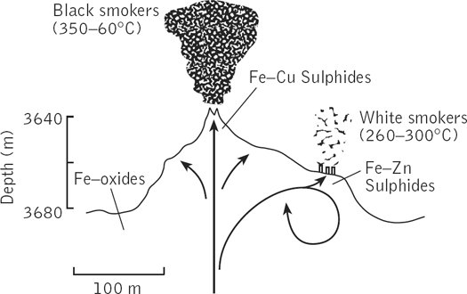
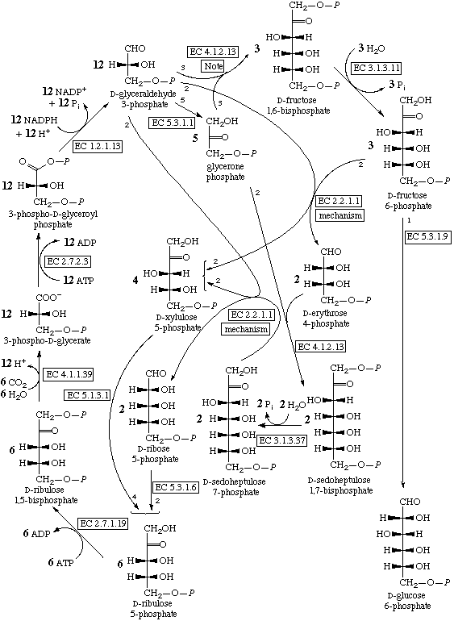
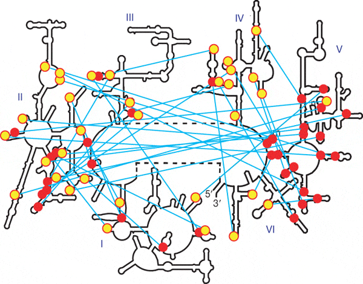
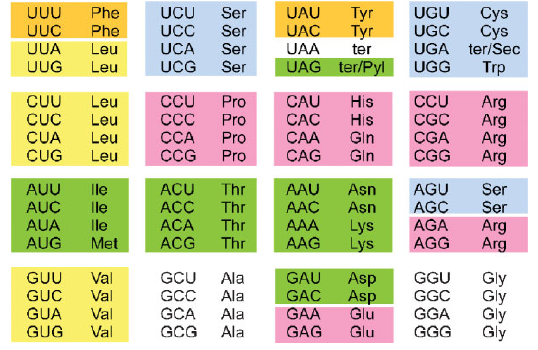
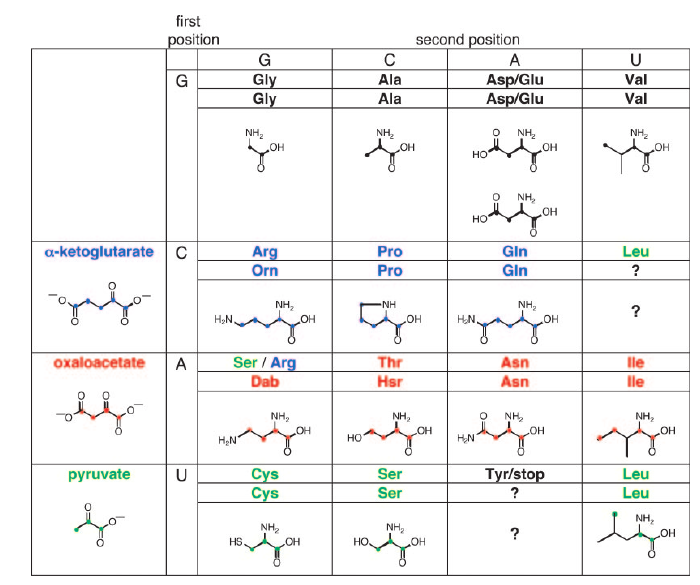
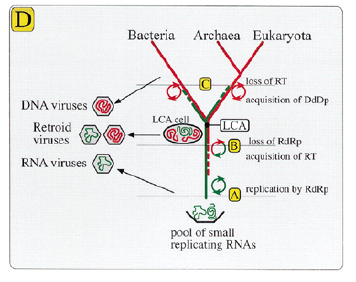
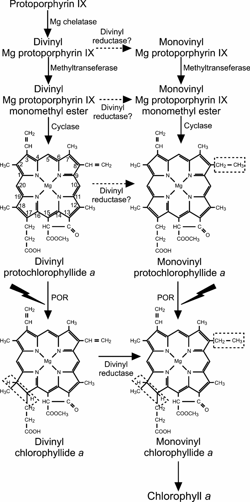
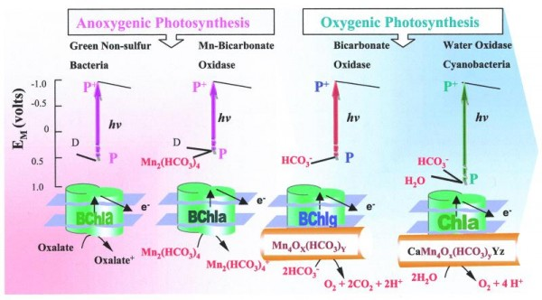

http://users.livejournal.com/_hellmaus_/118334.html
Мышь Эйнштейна
Происхождение жизни
- ХИМИЧЕСКИЕ ЭЛЕМЕНТЫ, ДОСТУПНЫЕ ДЛЯ ПОСТРОЕНИЯ ЖИВЫХ ОРГАНИЗМОВ
- ИСТОРИЯ ПРЕДСТАВЛЕНИЙ О ПРОИСХОЖДЕНИИ ЖИЗНИ
- СОВРЕМЕННАЯ ПРЕДБИОЛОГИЧЕСКАЯ ХИМИЯ И ПРОБЛЕМА ХИРАЛЬНОЙ ЧИСТОТЫ
- ФОТОХИМИЯ, ПРОИСХОЖДЕНИЕ НУКЛЕОТИДОВ И РНК
- ВОССТАНОВЛЕНИЕ СО2 И ЭНЕРГЕТИЧЕСКОЕ ОБЕСПЕЧЕНИЕ ПРЕДБИОГЕННЫХ СИНТЕЗОВ. «ЖЕЛЕЗНЫЙ МИР» И «ЦИНКОВЫЙ МИР».
- ПРОИСХОЖДЕНИЕ БЕЛКОВОГО СИНТЕЗА И ГЕНЕТИЧЕСКОГО КОДА
- МИР ВИРУСОВ, ПОСЛЕДНИЙ ВСЕОБЩИЙ ПРЕДОК И ПРОИСХОЖДЕНИЕ ДНК
- ПРОИСХОЖДЕНИЕ МЕМБРАН И МЕМБРАННОЙ ЭНЕРГЕТИКИ
- ЗАКАТ «ЦИНКОВОГО МИРА», ПРОКАРИОТНАЯ БИОСФЕРА И ПРОИСХОЖДЕНИЕ ФОТОСИНТЕЗА
- ПРОИСХОЖДЕНИЕ ЭУКАРИОТ. ВИРУСНОЕ ПРОИСХОЖДЕНИЕ ЯДРА
1. ХИМИЧЕСКИЕ ЭЛЕМЕНТЫ, ДОСТУПНЫЕ ДЛЯ ПОСТРОЕНИЯ ЖИВЫХ ОРГАНИЗМОВ
Почему все живое состоит из углерода, кислорода, азота и водорода?
Стандартный ответ, который кочует по литературе — потому, что углерод способен к образованию цепочек и колец из своих атомов, образуя гигантское разнообразие органических молекул. И потому, что вода является уникальным растворителем, способным растворять огромное разнообразие веществ, а так же за счет высокой теплоемкости, теплоты замерзания и теплоты испарения стабилизирующем температуру. Экзобиологические исследования (поиск жизни на других планетах) концентрируются на планетах с такой температурой поверхности, при которой возможно существование жидкой воды. Великий астроном Карл Саган жестко критикует эту позицию, называя ее «водно-углеродным шовинизмом», и считает, что другим ученым просто не хватает фантазии, чтобы представить себе альтернативную биохимию на других химических элементах.
В фантастике то и дело можно встретить описания кремнийорганической жизни, или жизни, использующей фтороводород либо аммиак в качестве растворителя. Кремний действительно способен образовывать сложные молекулы с длинными цепочками и кольцами атомов. Такой же способностью обладает и бор, на который, насколько мне известно, фантасты не обращали внимания. Воду в качестве растворителя действительно могут заменить NH3 и HF. Однако, я придерживаюсь водно-углеродного шовинизма и собираюсь обосновать его при помощи ядерной физики.

Распространенность элементов во Вселенной
(http://www.astronet.ru/db/msg/1188613).
Больше всего водорода, второе место за гелием. Следом идут углерод, кислород и азот. Три легких элемента — литий, бериллий, бор — весьма редки. От кислорода и до титана распространенность элементов плавно убывает, причем элементы с нечетными атомными номерами встречаются реже, чем с четными. Затем идут несколько широко распространенных металлов — хром, марганец, железо, никель. Элементы, следующие за никелем, и особенно за цинком, совсем редки.
Почему так получается?
Ядра тяжелее дейтерия (тяжелого водорода) образуются в основном в термоядерных реакциях, протекающих в звездах. Простейшая из таких реакций, имеющая самую низкую температуру зажигания — протон-протонный цикл. Благодаря ему светит Солнце и другие звезды небольшой массы. В этой реакции четыре протона в несколько стадий превращаются в ядро гелия с выделением энергии. В более массивных звездах (от полутора масс Солнца) зажигается следующая реакция - углерод-азотный цикл. В нем тоже протоны превращаются в ядра гелия, а ядро углерода выступает в качестве катализатора. Вторым итогом этой реакции является частичное превращение углерода в азот и кислород.
Так или иначе, со временем в центре звезды кончается водород и образуется скопление гелия. Горение водорода продолжается в тонком слое вокруг гелиевого ядра. Внешние оболочки звезды при этом раздуваются, звезда становится красным гигантом. Если масса звезды не превышает трех масс Солнца, то по мере исчерпания водорода в центре оболочка будет сброшена, а горячая гелиевая сердцевина будет видна на небе как белый карлик и за несколько миллионов лет остынет и погаснет.
Жизнь тяжелых звезд оказывается интереснее. Их гелиевая сердцевина разогревается настолько, что в ней зажигается следующая термоядерная реакция — 3-альфа процесс, превращение гелия в углерод. Стареющая звезда получает новый мощный источник энергии и становится сверхигантом. У более массивных сверхгигантов по мере сгорания гелия начинаются термоядерные реакции с участием углерода и кислорода, в них образуются ядра неона, магния, кремния и так далее — изотопы с четным числом протонов и нейтронов. Чем более тяжелые ядра сливаются, тем быстрее идут реакции. Если горение водорода в массивной звезде растягивается на десятки миллионов лет, то горение гелия — только сотни тысяч лет. Горение углерода и кислорода с образованием неона, магния и кремния занимает сотни лет. Наконец, превращение неона, магния и кремния в серу, аргон, кальций и более тяжелые элементы занимает годы. Эти реакции заканчиваются с образованием ядра 56Fe — самого устойчивого из всех атомных ядер. В центре звезды-сверхгиганта накапливается железо и выделение энергии прекращается. Остывание центра звезды приводит к потере устойчивости — оболочки начинают падать к центру, звезда сжимается. В самом центре звезды под чудовищным давлением электроны соединяются с протонами в ядрах железа и образуется сверхплотное нейтронное вещество. Оно не может дальше сжиматься, а падающие оболочки звезды с разгону налетают на него. Из зоны контакта нейтронного вещества с обычным веществом звезды расходится мощная ударная волна и плотные потоки нейтронов. Нейтроны быстро захватываются атомными ядрами, и так синтезируются нечетные элементы от фтора до марганца и большинство элементов тяжелее железа, вплоть до нестабильных трансурановых. В эти последние несколько суток жизни звезды ее светимость возрастает в миллиарды раз, и астрономы говорят о вспышке сверхновой. Ударная волна разносит все оболочки звезды по космосу, первые тысячи лет после этого они видны, как светящаяся «планетарная туманность». На месте звезды остается маленький сверхплотный остаток — нейтронная звезда или черная дыра, а большая часть вещества возвращается в газо-пылевые облака, обогащая их тяжелыми элементами.
Есть несколько типов ядер, которые синтезируются в других процессах. Во-первых, это дейтерий — тяжелый водород. В звездах он быстро превращается в гелий, и считается, что современные запасы дейтерия образовались из водорода вскоре после Большого взрыва, быстрое остывание Вселенной предохранило их от превращения в гелий. Во-вторых, три легких элемента — литий, бериллий и бор — тоже в условиях звезд легко превращаются в гелий и углерод, и их синтез происходит в межзвездной среде в реакциях с участием космических лучей. Возможно, некоторое количество лития получилось вместе с дейтерием в первые моменты существования Вселенной. Наконец, «обойденные ядра» селена, молибдена, кадмия, лантана и некоторых других элементов (на графике соединены пунктирной линией ниже большинства ядер) не образуются в нейтроннозахватных процессах, их происхождение тоже связано с межзвездной средой и космическими лучами. Пики, соответствующие урану, торию и свинцу, означают, что заметная часть этих элементов образовалась путем распада их более тяжелых соседей. Свинец и висмут — два последних стабильных элемента, а уран и торий — два последних относительно стабильных (период полураспада измеряется миллиардами лет).
Таким образом, существование жизни на основе бора запрещено ядерной физикой: малая устойчивость его ядра приводит к тому, что его содержание во Вселенной в миллион раз меньше, чем кислорода и углерода. С кремниевой жизнью сложнее. Хотя сам кремний доступен в изобилии, в присутствии кислорода и воды он склонен образовывать очень устойчивые нерастворимые силикаты. Синтез кремнийорганических веществ требует отсутствия воды, и наиболее подходящим растворителем оказывается HF. Однако, единственный устойчивый изотоп фтора — 19F — образуется в звездных ядерных реакциях с весьма малым выходом, и содержание фтора во Вселенной примерно в десять тысяч раз ниже, чем кислорода. Кислород и углерод же являются самыми распространенными элементами Вселенной после водорода и гелия, и не удивительно, что живые организмы состоят в основном из них.
UPD: Важный комментарий на тему сверхновых звезд и синтеза тяжелых
элементов: http://freeresearcher.net/?p=3670&cpage=1#c
Сверхновые страдают от классической проблемы линнеевских классификаций: обнаружив первые сверхновые, Цвики (да, тот самый скандально известный гениальный мудак Цвики) и Бааде придумали гипотезу коллапса в нейтронную звезду и начали искать новые сверхновые для ее подтверждения. Лично Цвики нашел их 120 штук, до сих пор никем не побитый рекорд. А уже затем выяснилось, что общие внешние признаки навесили на два совершенно разных явления, причем исторически первые изученные профили, сверхновые типа Ia, оказались совершенно не про нейтронный коллапс. А еще затем, чтобы окончательно добить ценность этой классификации, сверхновые типов Ib и Ic оказались как раз про нейтронный коллапс, то есть совершенно не родственниками Ia.
Сейчас, когда астрофизики говорят просто “сверхновая”, априори подразумевается второй тип плюс Ib/Ic. Даже википедийная статья про второй тип начинается с “It has been suggested that Type Ib and Ic supernovae be merged into this article or section.” А когда говорят “первого типа”, то в уме держат “кроме Ib/Ic”. Пикатности ситуации добавляет то, что “неправильные” сверхновые Ia вообще-то встречаются или как минимум детектируются примерно на порядок чаще, чем все три других типа вместе взятые. Короче, твой биолог уже на этом этапе попался в ловушку, хех.
Итак, сначала бедный родственник. Тип Ia происходит родом из двойных систем. Поскольку звезды в двойных системах почти всегда разного возраста и веса, регулярно возникает ситуация, когда одна из звезд уже растеряла оболочки и превратилась в белого карлика, а вторая только начала становиться красным гигантом. Примерно две трети звезд в нашей галактике являются двойным, тройными и так далее, и примерно у 97% звезд белый карлик – естественный финал жизненного пути в главной последовательности (в зависимости от обстоятельств карликом может стать звезда массой до 10.5 солнечных), поэтому такая комбинация встречается намного чаще, чем можно было бы подумать. Так вот, если оболочка гиганта попадает в предел Роша карлика, карлик начинает воровать чужой водород.
При слишком быстром и/или неравномерном накоплении водорода на поверхности запускается цепная реакция, происходит термоядерный подрыв и мы получаем новую. Обычно орбита карлика от взрыва новой сильно не страдает, а собственной массы карлик теряет немного, порядка одной десятитысячной, поэтому процесс может регулярно повторяться с периодичностью от нескольких десятков до нескольких десятков тысяч лет. Сейчас считается, что почти все новые имеют квазистабильный период, просто у нас недостаточно долгосрочных наблюдательных данных. В любом случае взрывы новых приводят к синтезу только самых легких элементов и в мизерных по вселенским меркам количествах, поэтому они нам не интересны.
Гораздо интереснее, если украденная масса накапливается достаточно равномерно и медленно. Когда-то считалось, что это приводит к превышению предела Чандрасекара и коллапсу, то есть все равно привет Цвики, но сейчас мы уже знаем, что этого не может случиться вообще или может, но в очень экзотических случаях вроде столкновения двух белых карликов. А у попсовых углеродно-кислородных карликов в атмосфере красного гиганта все происходит намного увлекательнее. Поскольку белый карлик уже состоит из вырожденного электронного газа (о котором чуть ниже), давление внешних украденных слоев приводит не к классическому повышению давления и плотности ядра, но полностью уходит в рост его температуры. В момент, когда карлик почти достиг предела Чандры (буквально в одном проценте массы от предела), температура дорастает до достаточной для поджигания углерода. Несложно догадаться, что высвобождаемая сгорающим углеродом энергия тоже не повышает давление / расширяет ядро, а лишь разогревает ядро еще сильнее, причем благодаря идеальной теплопроводности вырожденной материи тепло распределяется по ядру равномерно и моментально. Что мы имеем в итоге? Правильно, гигантскую термоядерную бомбу, в которой с момента запуска углеродного синтеза и до почти полного выгорания углерода (и фрагментарного – кислорода) проходит всего несколько секунд. А затем хомячка разрывает на куски.
Первый тип чрезвычайно ценен тем, что мы изначально очень точно знаем массу
взорвавшейся звезды, ~99% предела Чандры, а по спектру и профилю горения можем
достаточно реалистично оценить исходный состав ядра и, соответственно, очень
точно посчитать энергетический выход процесса. Можем и не считать, потому что и
так знаем: сверхновые первого типа выделяют практически фиксированное количество
энергии, 1-2*1044 джоулей. В сочетании с отличной заметностью на расстоянии (на
пике светимость первого типа равна примерно пяти миллиардам солнечных, это за
вычетом редкой экзотики вроде типа IIn самые яркие взрывы в природе) сверхновые
Ia являются лучшими стандартными свечами, но это ты и так знаешь.
Причем даже если взрывной пик упущен, разлетающееся облако подсвечивается
распадом никеля-56 до кобальта-56 до железа-56, обеспечивая заранее известный
график светимости, то есть запасную стандартную свечу.
Что здесь очень важно понимать: хотя сверхновые первого типа являются примерно на два порядка менее энергетическими процессами, чем типичные коллапсары, тяжелых элементов они выбрасывают при взрыве примерно столько же или даже больше. Здесь сказываются как безумные нейтронный и фотонный потоки в момент взрыва (у коллапсаров это преимущественно нейтринный поток) для кормления S-, R-, Rp- и P-процессов, так и тот банальный факт, что все насинтезированное не падает обратно на нейтронную звезду, а разлетается в открытый космос.
А встречаются Ia, повторюсь, в разы чаще, чем второй тип. Это в галактиках первого поколения звезды сплошь и рядом были голубыми гигантами в десятки и сотни солнечных, сгорали за жалкие миллионы лет и щедро усеивали пространство тяжелыми элементами, нейтронными звездами и черными дырами, но в наше время 80% звезд вообще имеют массу в пределах одной десятой солнечной, так что сверхновые первого типа сейчас уверенно держат первое место по производственным возможностям. Разумеется, коллапсар в пятьдесят солнечных масс намного романтичнее, но скорее всего нашей жизнью мы обязаны унылому белому карлику.
By weaponer on 13 September, 2012
Незадача с классификацией, повторюсь, произошла из-за того, что “классические” сверхновые второго типа внешне чертовски похожи на первый тип: у них близкая светимость на пике, медленно остывающее облако и похожие спектры. Само разделение на типы изначально произошло исключительно по отсутствию/наличию водородных линий в спектре, и именно поэтому Ib/Ic оказались в одной компании с Ia: у всех троих оголенное ядро, только Ia взрывается, а Ib/Ic коллапсируют. Лишь с развитием наблюдательных возможностей начали обнаруживаться реальные различия, от в действительности разных графиков светимости и разных скоростей джетов (это одна из главных проблем с использованием второго типа как стандартной свечи, скорость джета очень большая и вариативная, до десятой световой, поэтому мы не можем полагаться на красное смещение) до нейтринного всплеска, упреждающего появление на небе II/Ib/Ic.
Возвращаясь к исходному тексту, понимание происходящего там заканчивается примерно в районе образования железной сердцевины, а затем начинается бред. Все потому что к этому времени ядро из ведения “классической” термоядерной физики уже перешло в зону ответственности квантовой механики, сжавшись до срыва электронных облочек и перехода в состояние вырожденного электронного газа.
Кстати, мало кто понимает, что вот эта приводимая в каждой второй статье схема слоев разных элементов в ядре является не инфографикой для демонстрации последовательности горения, а реальной структурой. Ядро действительно слоеное, тяжелые продукты синтеза мигрируют к центру, легкие остаются на поверхности. Железо же является конечным продуктом синтеза не потому, что его ядро “самое устойчивое” – позор биологам! – а потому, что это последний экзотермический и, следовательно, самоподдерживающийся синтез. Все более тяжелые элементы при синтезе поглощают больше энергии, чем отдают обратно, так что активный термояд заканчивается на образовании железа и некоторого количества никеля с кобальтом на заемные джоули. Отсюда и “железный пик” в распространенности элементов во Вселенной.
Так вот, вырожденный электронный газ. Типичная научножурналистская полуправда-полузаблуждение вроде “нейтронная звезда состоит из нейтронов” заключается в утверждении, что ядро сжимается по мере замедления термояда и остывания, когда падающая температура/внутреннее давление не способны уже сопротивляться гравитации и давлению внешних слоев. Твой биолог именно так и пишет, остывающее железное ядро. На самом деле процес идет ровно наоборот, никакого остывания нет и в помине, а замедление термояда регулярно сменяется запуском новых цепочек благодаря сжатию. Ядро сжимается потому, что в нем накапливаются более тяжелые и плотные продукты синтеза, для поддержания которых при прежней плотности необходимы бы были намного большие температуры, а так как дополнительных источников энергии для этих температур нет, новый баланс давления и излучения устанавливается при большей плотности и большей же температуре, полученной уже за счет самого сжатия (оно выделяет колоссальное количество энергии). В результате ядро сжимается и очень сильно разогревается, а заодно ускоряет термояд во внешних слоях, что в свою очередь увеличивает светимость звезды. Именно поэтому по мере накопления гелия наше Солнце прирастает в светимости примерно на 10% за миллиард лет, а под занавес жизни перегретое ядро раздует и начнет срывать его внешние оболочки, особенно когда начнутся гелиевые вспышки (скорость гелиевого термояда невероятно чувствительна к температуре, поэтому зажигание гелия запускает очень быструю цепную реакцию).
Fun fact: обычно считается, что само по себе горение любых звезд обогащает Вселенную тяжелыми элементами, рассыпанными в пространстве. Реальность, как и почти все в астрофизике, сильно отличается от популярных представлений. Хотя Солнце выжигает 620 миллионов тонн водорода в секунду, производя 4.26 миллиона тонн чистой энергии, за миллиард лет оно конвертирует в гелий всего 1.4% своего водорода, ну или порядка одной пятой за полный жизненный цикл, причем весь этот гелий осядет в ядре. Даже гелий и тяжелые элементы из исходного газа постепенно мигрируют в ядро, фотосфера сейчас более водородная (75%), чем была у протозвезды (71%), а сама протозвезда (27.4% гелия) была лишь чуть грязнее газа первичного нуклеосинтеза (25% гелия-4 после Большого взрыва), и это при том, что Солнце относится к третьему поколению звезд. Сброшенные под конец жизни Солнца оболочки будут заметно богаче водородом, чем исходный газ. Рядовые звезды переваривают водород, тру, но их продукты горения захораниваются в остывающих ядрах, а назад в космос возвращается пусть в меньших количествах, но более чистый водород. Впрочем, есть и исключения, у которых материал ядра активно перемешивается со сбрасываемыми оболочками.
Чем тяжелее продукты синтеза и чем сильнее давление внешних слоев, тем больше температура и плотность, при котором достигается новый баланс ядра. И хотя температура может расти почти бесконечно до планковской, резервы плотности упираются в размеры атомов, которые определяются сопротивлением их электронных оболочек. В какой-то момент происходит срыв оболочек, ядро превращается в одну гигантскую квантовую систему, поведение которой с этого момента управляется уже не Больцманом, а принципами Паули и Гейзенберга.
Суть происходящего в том, что согласно принципу Паули две частицы в квантовой системе не могут занимать одно и то же энергетическое состояние. (в этот момент в образованной аудитории обычно раздаются возмущенные возгласы, что им по слогам зачитывают букварь, перебиваемые встречным вопросом “а вы понимаете, что именно значит эта фраза?”) На самом-то деле все просто, все возможные состояния описываются комбинациями спина, позиции и скорости с поправкой на гейзенберговскую неопределенность. Возможные состояния по спину представлены здесь фермионной статистикой, а возможные состояния по позиции… как бы проще сформулировать “до хуя частиц в ограниченном пространстве”?
Поэтому попытки уплотнить количество частиц на единицу пространства упираются в гейзенберговскую неопределенность, за которой дополнительные частицы могут добавляться только при условии отличия их скорости/энергии от уже имеющихся. Классический пример выглядит так: представим газ, который поочередно сжимается и охлаждается до абсолютного нуля. В конце концов мы приходим к состоянию, при котором позиция каждой частицы определена предельно точно в пределах планковской константы, новые впихнуть просто некуда, Паули не позволяет. В соответствии с принципом неопределенности это одновременно означает, что энергия частиц предельно неопределенна, то есть хотя газ абсолютно холодный, скорости частиц варьируются от нуля до скорости света, а для поддержания его в таком сжатом состоянии мы должны приложить гигантскую силу. Давление классического газа при нулевой температуре, как мы помним, равно нулю, давление вырожденного газа огромно. Что еще интереснее, по той же причине повышение температуры вырожденного газа практически не влияет на его давление, оно меняет лишь распределение скоростей частиц.
Another fun fact: вырожденность материи не обязательно относится ко всей материи в заданном объеме. У белых карликов слэш пережатых ядер вырожденным является именно электронный газ, ионы же остаются в обычном состоянии. Та же история относится и к металлам. Если быть до конца скрупулезными, вырожденное давление проявляется в любой материи, но в нормальных условиях оно ничтожно на фоне термального давления.
В реальности состояние вырожденности начинается намного раньше, чем достигается планковская точность позиции, поэтому у вырожденного газа еще есть возможность дальнейшего сжатия. Это приводит к очень интересному эффекту: добавление массы не увеличивает температуру, но увеличивает силу гравитационного сжатия, поэтому ядро, перешедшее в вырожденное состояние, при поглощении дополнительной материи не увеличивается в размерах, а наоборот сжимается. Одновременно поглощение дополнительной энергии идет исключительно на повышение температуры, но не давления, а релятивистские скорости частиц превращают вырожденный газ в идеальный теплопроводник. Именно поэтому Ia взрываются целиком и сразу, и именно поэтому в ядрах гигантов столь быстро выгорают тяжелые элементы, процесс теплового разгона ядра с момента перехода в вырожденное состояние идет исключительно по нарастающей.
Поскольку ионы остаются в нормальном состоянии, термальное давление также вносит свой вклад в поддержание объема ядра, однако на этом этапе оно уже не является существенным. Мне лень считать точный вклад, но прекращение синтеза по достижению железа лишь слегка ускоряет наступление коллапса, а не является его причиной. Железо само по себе слишком тяжелое, так что даже если бы экзотермический синтез мог идти вплоть до урана, коллапс происходил бы где-то в районе никеля.
Fun! Предел Чандрасекара зависит как от химического состава звезды, поскольку соотношение электронов к массе различно для разных элементов, так и от термического давления. Обычно к определению добавляется “для невращающихся ядер”, однако типичная скорость вращения звезд недостаточна для заметного влияния на предел. Наиболее известное значение 1.44 солнечных масс относится к углеродно-кислородным изотермическим белым карликам. Для сверхмассивных звезд с железным ядром значение может опускаться ниже 1.4.
Энивэй, как только масса вырожденной части ядра достигает предела Чандрасекара с поправкой на термальное давление, принцип Паули сдает позиции. Поскольку мы имеем дело с гигантской квантово-механической системой, процесс происходит мгновенно во всем ее объеме, который к тому времени уже очень невелик, примерно с Землю размером. Ядро в буквальном смысле обрушивается к центру, со скоростью до четверти световой. Очень важно еще раз подчеркнуть: коллапс происходит не из-за превращения протонов в нейтроны, а наоборот, формирование нейтронов становится следствием коллапса. Гигантское количество выделяемой при коллапсе энергии сначала конвертируется в гамма-всплеск, в буквальном смысле разрывающий ионы на куски до альфа-частиц и свободных нейтронов, а затем вызывает процесс, который за неимением лучших идей назвали “обратный бета-распад”, хотя его фейнмановская диаграмма с прямым бета-распадом не дружит: электрон с размаху впечатывается в протон, протон от неожиданности испускает электронное нейтрино и становится нейтроном. За несколько миллисекунд внутри обычной звезды формируется нейтронная, со средней плотностью атомного ядра, давление которой поддерживается сочетанием вырожденной нейтронной материи и сильного взаимодействия.
И нет, нейтронная звезда состоит не из одних нейтронов, иначе как бы она могла генерировать свои суперсильные магнитные поля? Чем ближе к поверхности, тем больше ее вещество представлено альфа-частицами, протонами, электронами и выжившими ионами; кора нейтронной звезды состоит почти исключительно из обычной вырожденной материи.
Детали дальнейших процессов до сих пор являются очень спорными. Достаточно сказать, что вскоре после появления гипотезы внутризвездного аккреционного диска как механизма образования направленных гамма-выбросов при взрыве гиперновых, разработчики моделей сверхновых очень обрадовались и теперь пытаются присобачить аккреционные диски для передачи энергии между нейтронной звездой и внешними оболочками, в обе стороны. Есть такая нерешенная проблема передачи импульса: никто не может точно сказать, как именно в ходе взрывов сверхновых нейтронную звезду с огромной скоростью выбрасывает куда-то в сторону.
Так или иначе, взрыв звезды через обрушение внешних слоев на сколлапсированное внутреннее ядро и отскок обратно уже давно признаны заблуждением: от нейтронных звезд почти ничего не отскакивает, гравитация слишком сильная, все упавшее на поверхность немедленно поглощается с громким хрустом. Ударные волны внутри внешних слоев ядра при прекращении коллапса действительно формируются, но за пределы ядра не выходят, останавливаясь у поверхности и расходуясь на разрушение ионов тяжелых элементов. За считанные десятки миллисекунд коллапс стирает предыдущую историю термоядерного синтеза, запечатывая полторы солнечных массы самых тяжелых продуктов в нейтронную звезду и диссоциируя в мелкую кашицу оставшееся снаружи.
На самом же деле в момент коллапса почти вся вытекающая из внутреннего ядра энергия выходит через релятивистские электронные нейтрино. Повторюсь, наружу вырываются ТОЛЬКО нейтрино и немного гаммы с поверхности, ядро в ходе коллапса становится настолько плотным, что все остальные частицы надежно запечатываются внутри, никаких “плотных потоков нейтронов, захватываемых атомными ядрами” нет и в помине. Но по завершении коллапса энергии внутри ядра остается слишком много, оно слишком горячее (порядка 100 миллиардов кельвинов), чтобы оставаться стабильным и не выплескивать нейтроны. Поэтому еще около десяти секунд происходит процесс формирования термальных пар нейтрино-антинейтрино всех ароматов, через которые стравливается в несколько раз больше энергии, чем при обратном бета-распаде. Суммарно ядро стравливает через нейтрино 99% всей выделенной при коллапсе энергии, 1046 джоулей – в сто раз больше, чем при взрыве Ia.
И хотя почти все нейтрино беспрепятственно улетают наружу, около одного их процента поглощается уцелевшими внешними слоями ядра. Даже этой небольшой доли хватает, чтобы разнести на хуй всю остальную звезду, а останки разогреть и разогнать вплоть до одной десятой световой. И именно в этот момент во внешних слоях ядра создаются условия для синтеза – заново, с чистого листа! – всей таблицы Менделеева. Механизм нейтринного захвата и последующего синтеза все еще очень плохо смоделирован и проще сказать, что мы его не понимаем, но знаем, что выбрасываемое в межзвездную среду удивительным образом совпадает по составу и количеству с продуктами подрыва Ia.
Второй тип взрывается медленно и печально. Между коллапсом и разрушением фотосферы проходит несколько часов, что оказывает неоценимую услугу астрономам: сначала детекторы по всему шарику засекают всплеск нейтринной активности – засекают легко, нейтринный выхлоп сверхновой может быть ярче солнечного – затем SNEWS приводит телескопы в состояние боевой готовности, а два-три часа спустя во всей красе под прицелом телескопов зажигается звездочка.
Разумеется, не вся материя улетает в открытый космос, часть ее падает обратно
на нейтронную звезду. Если масса исходной звезды была в пределах примерно 20
солнечных, нейтронная звезда скрипит и уменьшается в размерах, но держится.
Больше – происходит второй коллапс с образованием черной дыры, хотя сейчас
рассматриваются очень гипотетические модели так называемых экзотических звезд с
плотностью выше нейтронных. Важно то, что в отличие от прямого коллапса в черную
дыру (типично массы от 40-50 солнечных) при таком варианте развития событий
тяжелые элементы все равно формируются и выбрасываются наружу. Прямой же коллапс
в дыру лишает нас ценного нейтринного потока, а аккреционные диски и джеты –
не место для дискуссий не совсем подходящие условия для синтеза
химии.
Как-то так.
Еще в астрофизике вместо “тяжелые элементы” говорят просто “металлы”, но окружающие химики и биологи от такого обычно пытаются застрелиться, поэтому я вроде нигде про металлы не ляпнул.
2. ИСТОРИЯ ПРЕДСТАВЛЕНИЙ О ПРОИСХОЖДЕНИИ ЖИЗНИ
Древние и средневековые ученые всего мира были уверены, что живые организмы постоянно самозарождаются из неживой материи: мухи из гниющего мяса, мыши из грязных тряпок, и так далее. Первым попробовал проверить это итальянец Франческо Реди в 17 веке. Он клал мясо в кувшины и закрывал часть кувшинов тонкой кисеей. Оказалось, что черви заводятся только в тех кувшинах, которые не закрыты кисеей и куда могут залетать мухи. Так было показано, что самозарождение червей в мясе невозможно, черви вылупляются из яиц, отложенных мухами.
Затем были открыты микроорганизмы. Все считали, что хотя бы эти простейшие существа-то точно могут самозарождаться! Но и это было опровергнуто Спалланцани и Пастером в 19 веке. Лаццарро Спалланцани кипятил бульон и запаивал его в стеклянных колбах. Бульон не прокисал месяцами и годами в запаянной колбе, но быстро портился после вскрытия колбы, и в нем обнаруживались бактерии. Критики возражали, что для самозарождения в запаянной колбе не достаточно «упругости» (давления) воздуха, и Пастер повторил эксперимент Спалланцани с изменением: вместо наглухо запаяной колбы он вытягивал ее горло в длинную тонкую S-образно изогнутую трубочку. Этого было достаточно, чтобы бульон не портился, хотя воздух мог проходить внутрь. Так было показано, что даже микроорганизмы образуются путем размножения существующих микроорганизмов. Соответственно, перед учеными встала задача объяснить происхождение жизни.
Первые успехи в этом были достигнуты Опариным и Холдейном в 1920-ых годах. Опарин работал с коллоидными растворами белков и полисахаридов и обнаружил, что в некоторых условиях растворенные белки собираются в компактные капли — коацерваты — которые могут расти, поглощая растворенные вещества из внешней среды и делится, подобно клеткам. Так же он предположил, что атмосфера древней Земли была бескислородной и поэтому в ней был возможен абиогенный синтез органических веществ. Холдейн развил и конкретизировал идею «первичного бульона» - древнего океана, взаимодействующего с бескислородной атмосферой, в котором под действием разрядов молний, солнечного ультрафиолета и вулканических извержений идут разнообразные химические реакции, приводящие к образованию сложных органических молекул, образующих затем коацерватные клетки.
Идеи Опарина и Холдейна получили экспериментальное подтверждение в 1953 году в опытах Стенли Миллера. Он запаивал смесь газов, имитирующую древнюю атмосферу Земли (СН4, NH3, H2S, CO2) в замкнутую стеклянную установку, в которой была подогреваемая колба с водой, холодильник и электроды. Через электроды пропускались электрические разряды, имитирующие молнии. По прошествии нескольких суток Миллер вскрыл установку и обнаружил в воде разнообразные органические молекулы, включая простейшие аминокислоты (глицин, аланин), сахара (глицеральдегид, гликолевый альдегид) и органические кислоты (уксусная, молочная), характерные для живых организмов. Последующие экспериментаторы, варьируя условия и совершенствуя методы анализа, расширили набор продуктов в таком синтезе. Ими были получены многие аминокислоты, пуриновые основания — аденин и гуанин (они получаются, если в смесь газов добавить синильную кислоту), четырех- и пятиуглеродные сахара.
В целом можно было считать, что большинство необходимых для жизни молекул синтезируются абиогенно в условиях древней Земли.
Тем временем глубокое изучение современной жизни биохимиками и молекулярными биологами показало, что живые клетки не так уж просты, как казалось ранее, и пропасть между живым и неживым очень широка.
Первой проблемой стала огромная сложность живых клеток. Даже самые простые бактерии имеют геном из более миллиона нуклеотидов, кодирующий свыше тысячи белков. Для работы этого генома требуются специальные молекулярные машины синтеза белка (рибосомы), синтеза ДНК (репликативная вилка), энергоснабжения (как минимум 12 ферментов гликолиза, а обычно еще и электрон-транспортная цепь на мембране) и средства регуляции и управления (транскрипционные факторы и сигнальные белки). Сложность такой системы очень высока, а более простых самостоятельно реплицирующихся систем биология не знает. Вирусы не в счет — для их размножения требуется сложная живая клетка. Дарвиновский естественный отбор может порождать все более сложные системы, но для этого они с самого начала должны быть способны к репликации. Если естественный отбор начинается только с появлением первой клетки, то для ее образования случайным путем требуется гигантское время — на много порядков больше возраста Вселенной. В англоязычной литературе эта проблема называется «irreducible complexity» и ей много внимания уделяют сторонники идеи «разумного замысла» - креационисты, притворяющиеся учеными. Им принадлежит, например, аналогия «случайное самозарождение жизни так же вероятно, как случайная сборка Боинга-747 при прохождении урагана через мусорную свалку».
Вторая проблема чисто химическая, и связана она с оптической активностью молекул в живых организмах. Напоминаю, что «оптически активными» называются органические молекулы, в которых к одному атому углерода присоединены четыре разных группы. Поскольку связи атома углерода направлены к вершинам пирамиды, возможны два способа размещения четырех групп вокруг такого атома, которые являются зеркальными отражениями друг друга, подобно левой и правой руке. По аналогии с рукой такое свойство веществ называется еще «хиральностью». Название «оптическая активность» напоминает о свойстве таких веществ поворачивать плоскость поляризации проходящего через них света, если одного оптического изомера больше, чем другого. Это позволило Луи Пастеру разделить левовращающий и правовращающий изомеры винной кислоты, просто сортируя их кристаллы пинцетом в поляризованном свете — одни были темными, а другие светлыми. Он же показал, что плесень может питаться только одним изомером винной кислоты. Оптические изомеры многих веществ, например молочной кислоты, легко отличимы по вкусу и запаху, потому что наши обонятельные рецепторы — белки, построенные из левых изомеров аминокислот. Правовращающие аминокислоты в белках не встречаются, хотя иногда бывают в клеточных стенках бактерий, олигопептидных антибиотиках и других экзотических местах. Кроме того, все природные ДНК и РНК содержат исключительно правый изомер сахара (рибозы или дезоксирибозы). Живое вещество, таким образом, хирально чистое, тогда как во всех абиогенных синтезах получаются левые и правые изомеры в равных долях, а синтезированные из такой смеси полипептиды и полинуклеотиды имеют беспорядочную структуру и не способны выполнять никакие функции. Оптическая активность вещества проявляется либо при взаимодействии с поляризованным светом, либо при встрече с другим оптически активным веществом. Если мы хотим объяснить переход от смеси изомеров в абиогенно синтезированной органике к хирально чистому живому веществу, то оказываемся практически в положении Мюнхаузена, тащившего себя из болота за волосы — ведь чтобы пошли первые стереоспецифичные реакции, нужен стереоспецифичный фермент из хотя бы 50-100 аминокислот или нуклеотидов одной оптической формы, который случайным соединением мономеров создать невозможно. Можно попытаться найти источник поляризованного ультрафиолетового излучения, которое бы избирательно разрушало один оптический изомер. По некоторым астрономическим гипотезам, таким источником могло быть молодое Солнце, обладавшее мощным магнитным полем. Следы поляризованного ультрафиолета обнаруживаются в органическом веществе метеоритов. Там содержится ряд аминокислот, похожих на те, что получались в опытах Миллера, и левовращающие изомеры преобладают — их около 60%. Критики возражали, что метеориты могли быть загрязнены земными бактериями с их левыми аминокислотами, но преобладание левого изомера показано и для тех метеоритных аминокислот, которые не синтезируются и не поедаются бактериями — например, 2-метил-2-аминобутановой кислоты. Тем не менее, соотношение изомеров 60 к 40 явно недостаточно для простого случайного перехода к хиральной чистоте, и надо искать дополнительные механизмы.
Третью проблему подкинули геохимики и космохимики. Межпланетные аппараты изучили Луну, Венеру, Марс и Меркурий, стал известен состав атмосферы Венеры и Марса. Применение новых аналитических методов к древнейшим земным горным породам позволило уточнить состав древней атмосферы Земли. Он оказался очень похож на современные атмосферы Венеры и Марса — 98% СО2, 1,5% N2 и малые доли других газов, в основном аргона и SO2. Из такой атмосферы в аппарате Миллера не получается никакой органики. Для получения органики из CO2 необходим восстановитель, и ученые занялись его поисками.
Первое решение проблемы «неупрощаемой сложности» появилось в конце 70-ых годов. Тогда были открыты РНК, обладающие каталитической активностью, или рибозимы. Роль РНК расширилась от скромного посредника между ДНК и белками до центральной молекулы в биологии: ведь она способна как хранить наследственную информацию, так и катализировать химические реакции. Появилась теория «мира РНК» — самокопирующиеся рибозимы с активностью РНК-зависимой РНК-полимеразы, которые начали естественный отбор задолго до появления клеток, и со временем передали каталитические функции белкам, а длительное хранение наследственной информации — ДНК. В дальнейшем были открыты в природе и получены искусственно сотни рибозимов. Выяснилось, что рибозимом является и пептидил-транферазный центр рибосомы, катализирующий ключевую реакцию синтеза белков. Однако, пока ни один рибозим не может создать копию себя из мономеров, так что теория РНК-мира доказана не полностью. Кроме того, для синтеза РНК нужна энергия, например, в виде нуклеотидтрифосфатов, и теория РНК-мира не объясняет происхождение этой энергии.
3. СОВРЕМЕННАЯ ПРЕДБИОЛОГИЧЕСКАЯ ХИМИЯ И ПРОБЛЕМА ХИРАЛЬНОЙ ЧИСТОТЫ
Со времени опытов Миллера были открыты и другие химические реакции, способные производить органику в условиях древней Земли. Одна из интенсивно изучаемых таких реакций — формозная реакция Бутлерова, открытая еще в 1865 году. В этой реакции водный раствор формальдегида (СH2O) с добавлением Ca(OH)2 или Mg(OH)2 при небольшом нагревании превращается в сложную смесь сахаров. Изучению реакции много лет мешал ее «капризный характер» - колбу с раствором надо было греть несколько часов безо всяких видимых изменений, как вдруг в течение пары минут раствор быстро желтел, затем коричневел и загустевал. А если исходные реагенты были очень чистые, то реакция не шла вовсе. Как оказалось, причиной «капризов» является автокаталитический характер реакции: сначала формальдегид медленно превращается в двух- и трехуглеродные сахара (гликоальдегид, глицеральдегид и дигидроксиацетон), которые затем катализируют синтез самих себя и более крупных сахаров. Если к исходной смеси сразу добавить чуть-чуть гликоальдегида или глицеральдегида, реакция запускается почти сразу. Также можно осветить раствор ультрафиолетом, под действием которого некоторые молекулы формальдегида соединяются в гликоальдегид, запускающий реакцию.
Обычно в реакции Бутлерова получаются сложные смеси сахаров, в которых сахара, характерные для живых клеток, перемешаны с огромным разнообразием семи, восьми, девятиуглеродных сахаров и даже более сложных. Это долго не позволяло привлекать реакцию к предбиогенному синтезу. Однако, в последние годы обнаружилось несколько способов избирательно накапливать отдельные сахара, именно те, которые нужны для биохимии. Например, при добавлении растворимых силикатов, таких как Na2SiO3, силикат-анион образует комплексы с четырех- и шестиуглеродными сахарами, которые выпадают в осадок и не участвуют в реакции далее. Так накапливаются сахара, имеющие две соседние гидроксильные группы с одной стороны: эритроза, треоза, глюкоза, манноза.
Если же в реакционную смесь добавить гидроксиапатит (Ca3(PO4)2 * Ca(OH)2), то на его поверхности практически избирательно осаждается рибоза! Еще один избирательный катализатор реакции Бутлерова — комплекс аминокислоты пролина с ионом цинка. Он тоже останавливает реакцию на стадии пяти- и шестиуглеродных сахаров, и, что еще важнее, он стереоспецифичен! Комплекс «левого» пролина с цинком избирательно синтезирует «правые» сахара!
Синтез азотистых оснований тоже не сводится к добавлению синильной кислоты в аппарат Миллера. Показано, например, что все четыре азотистых основания синтезируются с высоким выходом из формамида (NH2CНO) на поверхности TiO2 в отсутствие воды, вакууме и ультрафиолетовом облучении. Такие условия существуют, например, в стратосфере, где и сейчас оксид титана составляет заметную долю пылевых частиц.
Азотистые основания для их участия в синтезе РНК-подобных полимеров должны сначала объединиться с сахаром и фосфатом. Еще в 1960-ые годы показано, что при ультрафиолетовом облучении раствора аденина, рибозы и фосфатов аденин сначала образует связь с рибозой, а затем присоединяет последовательно три фосфатные группы, превращаясь в АТР. Причем присоединение последней фосфатной группы происходит примерно в 100 раз быстрее, чем предшествующие реакции. Возбужденное триплетное состояние аденина обычно локализует неспаренный электрон на аминогруппе, эта форма легко образует фосфоамидную высокоэнергетическую связь с фосфатом. Далее фосфат переносится на 5' гидроксильную группу рибозы. Дифосфатная цепь АDP обладает как раз подходящей длиной для эффективного переноса третей фосфатной группы. Это, видимо, объясняет, почему в качестве универсального источника энергии в живых организмах используется гидролиз ATP до ADP и фосфата, хотя с таким же успехом можно использовать любой нуклеотид-трифосфат (и GTP, CTP, UTP эпизодически используются) и даже дифосфат (его гидролиз до монофосфата выделяет такое же количество энергии) — но гидролиз дифосфатов не используется, насколько я знаю, нигде.
Однако, этот способ синтеза активированных нуклеотидов не подходит для других азотистых оснований. Гуанин при облучении присоединяет рибозу, но практически не реагирует с фосфатом. Пиримидины не реагируют и с рибозой. Поэтому очень важной вехой в изучении предбиогенных синтезов стала вышедшая в 2009 году работа Сандерленда с коллегами.
Они получили активированные пиримидиновые нуклеотиды (циклические 2',3' урацил- и цитидин-монофосфаты), смешивая в одной системе сразу и предшественники сахаров, и предшественники нуклеотидов, и фосфат. Казалось бы, это крайне расширяет возможные химические реакции и должно повышать количество побочных продуктов, но эксперимент опроверг это предположение.
Авторы смешали цианоацетилен (7), цианамид (8), глицеральдегид (9) и гликоальдегид (10). Фосфат избирательно катализирует синтез промежуточных продуктов 11 (2-амино-оксазол) и 12 (арабинозо-амино-оксазолин), подавляя возможные побочные реакции. Затем продукт 12 реагирует с цианоацетиленом, давая вещество 13 (арабинозо-ангидронуклеозид). В обычном водном растворе при этом повышается pH, что приводит к гидролизу промежуточных продуктов и побочным реакциям с цианоацетиленом, но фосфат и тут приходит на помощь, поддерживая среду кислой и направляя реакцию в сторону продукта 13. Для его превращения в циклический цитидин-монофосфат достаточно подогреть реакционную смесь — все необходимое в ней уже имеется. Катализатором фосфорилирования становится мочевина, образующаяся из цианамида в ходе одной из побочных реакций. Наконец, чтобы избавиться от побочных продуктов этой реакции и превратить часть цитозина в урацил, достаточно ультрафиолетового освещения раствора.
Этот синтез поражает своим изяществом: побочные продукты одних реакций здесь становятся катализаторами последующих, фосфат направляет реакции в нужную сторону задолго до того, как войти в окончательный продукт, а ключевой промежуточный продукт (11) способен к самоочищению и накоплению в высоких концентрациях благодаря своей высокой летучести — он хорошо испаряется из водных растворов при слегка повышенной температуре и конденсируется во время ночных заморозков.

Обходной путь синтеза пиримидиновых нуклеотидов. Зеленые стрелки — реакции, открытые Сандерлендом с коллегами. Синие — ранее известные пути синтеза рибозы и цитидина. (Powner et al., 2009)
Как написал редактор журнала Nature в предисловии к работе команды Сандерленда: «Именно потому, что эта работа открывает так много новых направлений исследований, она на многие годы останется одним из великих достижений пребиотической химии»
И новые направления исследований немедленно начали развиваться. Уже через два года вышла статья группы Язона Хейна из Калифорнии, где они, добавляя к системе Сандерленда различные аминокислоты, получили стереоспецифический синтез рибонуклеотидов. Более того, достаточно было небольшого избытка одного из стереоизомеров аминокислот, чтобы в конце концов получились хирально чистые рибонуклеотиды!

Участие аминокислот в синтезе рибонуклеотидов. (Hein et al., 2011)
Аминокислоты вмешиваются в синтез Сандерленда на стадии реакции 2-амино-оксазола с глицеральдегидом, с образованием тройного продукта. Эта реакция стереоспецифична: пара глицеральдегида с аминокислотой одной хиральности реагирует в 4 раза быстрее, чем разнохиральная. Таким образом, небольшой избыток L-аминокислоты будет связывать L-глицеральдегид в побочный путь реакции, оставляя для синтеза рибонуклеотидов больше D-изомеров сахара. Сандерлендом ранее было показано, что рибо-амино-оксазолин, подобно винной кислоте в опытах Пастера, способен при упаривании раствора кристаллизоваться в хирально чистые кристаллы уже при соотношении изомеров 60%/40%. Экспериментально получены такие кристаллы рибо-амино-оксазолина прямо из реакционных смесей с участием 14 чистых L-аминокислот из 19, содержащихся в белках. Пролин по стереоспецифичности далеко превосходит все остальные аминокислоты: с ним для получения хирально чистых кристаллов достаточно начального соотношения 70%/30% L/D изомеров пролина.
Получение хирально обогащенных растворов аминокислот тоже показано в достаточно несложных условиях. Многие аминокислоты, включая пролин, склонны образовывать рацемические кристаллы с соотношением изомеров строго 1:1. При кристаллизации аминокислот из раствора можно увеличить избыток одного изомера с 1% до 85-90%.
Схема синтеза хирально чистых рибонуклеотидов. (Hein et al.,
2011)
Таким образом, достаточно, чтобы в синтез Сандерленда попал раствор аминокислот, хирально обогащенный путем частичной кристаллизации. В экспериментах Язона Хейна таким образом были получены хирально чистые рибонуклеотиды, начиная всего лишь с 1% хирально обогащенного пролина. Такое небольшое хиральное обогащение аминокислот легко может быть обеспечено фотохимическими процессами с участием поляризованного УФ-света: как мы писали выше, в метеоритах встречаются аминокислоты с хиральным обогащением до 18%, причем с избытком именно L-изомеров.
Были изучены и другие процессы, приводящие к обогащению одним оптическим изомером. Например, полимеризация аминокислот, сахаров и нуклеотидов на поверхности различных минералов (глина, пирит, апатит и другие). В такой ситуации, в отличие от раствора, могут преимущественно соединяться мономеры одной хиральности. Были открыты, например, системы каталитически активных коротких пептидов, которые избирательно разрезают и сшивают друг друга, устраняя небольшие отклонения от хиральной чистоты (до 1 аминокислоты не той хиральности на 10).
Литература:- Химикам удалось стабилизировать абиогенный синтез сахаров. [WWW Document]. URL
- Пармон В.Н. Новое в теории появления жизни. [WWW Document]. URL
- Hein, J.E., Blackmond, D.G., 2012. On the Origin of Single Chirality of Amino Acids and Sugars in Biogenesis. Accounts of chemical research.
- Hein, J.E., Tse, E., Blackmond, D.G., 2011. A route to enantiopure RNA precursors from nearly racemic starting materials. Nat Chem 3, 704–706.
- Kofoed, J., Reymond, J.-L., Darbre, T., 2005. Prebiotic carbohydrate synthesis: zinc-proline catalyzes direct aqueous aldol reactions of alpha-hydroxy aldehydes and ketones. Org. Biomol. Chem. 3, 1850–1855.
- Pasek, M.A., 2008. Rethinking early Earth phosphorus geochemistry. PNAS 105, 853–858.
- Pestunova, O., Simonov, A., Snytnikov, V., Stoyanovsky, V., Parmon, V., 2005. Putative mechanism of the sugar formation on prebiotic Earth initiated by UV-radiation. Advances in Space Research 36, 214–219.
- Ponnamperuma, C., Sagan, C., Mariner, R., 1963. Synthesis of Adenosine Triphosphate Under Possible Primitive Earth Conditions. , Published online: 20 July 1963; | doi:10.1038/199222a0 199, 222–226.
- Powner, M.W., Gerland, B., Sutherland, J.D., 2009. Synthesis of activated pyrimidine ribonucleotides in prebiotically plausible conditions. Nature 459, 239–242. (русский краткий пересказ: http://elementy.ru/news/431082)
- Saladino, R., Crestini, C., Ciciriello, F., Costanzo, G., Di Mauro, E., 2007. Formamide Chemistry and the Origin of Informational Polymers. Chemistry & Biodiversity 4, 694–720.
- Senanayake, S.D., Idriss, H., 2006. Photocatalysis and the origin of life: synthesis of nucleoside bases from formamide on TiO2(001) single surfaces. Proc. Natl. Acad. Sci. U.S.A. 103, 1194–1198.
4. ФОТОХИМИЯ, ПРОИСХОЖДЕНИЕ НУКЛЕОТИДОВ И РНК
Почему в состав РНК и ДНК входят именно аденин, гуанин, цитозин и урацил/тимин, а не другие подходящие по размеру гетероциклические азотистые основания?
Вопрос отнюдь не праздный, потому что биохимики уже синтезировали несколько пар альтернативных нуклеотидов, которые хорошо встраиваются в ДНК и РНК обычными ферментами, спариваются друг с другом, но не с А, Г, Т и Ц и расширяют нуклеотидный код до шестибуквенного.

Рис. 5. Пара альтернативных нуклеиновых оснований ((Yang et al., 2006))
То есть с задачей хранения генетической информации справились бы самые разные варианты нуклеиновых оснований, и А, Г, Т, Ц, возможно, были отобраны природой совсем по другим признакам. Как предположил крупный немецкий биофизик Армен Мулкиджанян, таким признаком была устойчивость к ультрафиолету. Здесь надо пояснить, как происходит взаимодействие молекул с квантами света. При попадании в молекулу кванта подходящей энергии он поглощается парой электронов, образующей химическую связь, и молекула возбуждается. Возбужденных состояний как минимум два. Сначала молекула оказывается в неустойчивом и короткоживущем синглетном состоянии. В нем спины электронов возбужденной пары еще антипараллельны, как и в спокойном состоянии молекулы. Отсюда молекула может сбросить возбуждение путем флюоресценции (излучения светового кванта с энергией чуть меньше исходной), путем рассеяния энергии в тепло либо перейти в триплетное состояние. В триплетном состоянии спины электронов становятся параллельны, и химическая связь фактически разрывается. Если была возбуждена одинарная связь, то молекула разваливается в этом месте на два радикала. Если была возбуждена Пи-электронная система, образующая двойные связи, то молекула в триплетном состоянии сохраняет целостность, но становится бирадикалом — у нее есть два неспаренных электрона. Поэтому триплетное состояние химически активно и вступает в разнообразные реакции, например, этилен при УФ-облучении частично димеризуется в циклобутан. Кроме химических реакций, из триплетного состояния возможен возврат в базовое невозбужденное состояние молекулы путем излучения кванта света — фосфоресценции. В отличие от флюоресценции, фосфоресценция может происходить спустя минуты и часы после облучения вещества, а разница в энергии поглощенного и излученного кванта света больше.
Так вот, у природных нуклеиновых оснований синглетное состояние крайне короткоживущее. Оно легко рассеивает энергию возбуждения в тепло через колебания и вращение молекулы, обмен атомами водорода и другие механизмы. Синглетное состояние аденина и гуанина живет около 10-12 секунды — примерно в 10000 раз меньше, чем синглетные состояния большинства ароматических молекул, например, аминокислоты триптофана. Цитозин и тимин несколько уступают по устойчивости пуриновым нуклеотидам, но образование Уотсон-Криковских пар повышает устойчивость еще примерно в 50 раз благодаря рассеиванию энергии в обмене протонами в водородных связях пары. Кроме того, в нуклеиновых кислотах плоские молекулы азотистых оснований лежат друг на друге стопкой, благодаря чему их Пи-электронные системы взаимодействуют друг с другом (стэкинг-взаимодействие) и могут передавать энергию возбуждения друг другу, еще усиливая рассеивание и дополнительно увеличивая устойчивость к ультрафиолету до 20 раз по сравнению с одной парой нуклеотидов. Более того, азотистые основания не просто сами устойчивы к ультрафиолету — они еще и могут защищать соседние молекулы. Например, они эффективно защищают от УФ-расщепления фосфоэфирную связь (О-Р). Так, при облучении глицерол-фосфата отщепление фосфорной кислоты происходит в 300 раз быстрее, чем при облучении аденозин-монофосфата, образование комплементарных пар и стэкинг-взаимодействие еще увеличивают степень защиты.
Таким образом, РНК-подобный полимер оказывается очень устойчив к УФ-расщеплению благодаря свойствам отдельных азотистых оснований и стэкинг-взаимодействию между ними. Синтез коротких молекул РНК из отдельных нуклеотидов был показан на поверхности минералов, таких как алюмосиликатные глины и сульфиды металлов, в присутствии пирофосфатов при упаривании воды и нагревании до 100-120 градусов.
Стэкинг-взаимодействие так же приводит к хиральной чистоте РНК-молекул. Олигонуклеотиды из 3-5 звеньев достаточно коротки, чтобы даже из рацемической смеси нуклеотидов случайно получались хирально чистые молекулы, и при этом достаточно длинны, чтобы стэкинг-взаимодействие давало заметный бонус к защите. Присоединение к такой цепочке нуклеотида другой хиральности неустойчиво, так как он хуже вступает в стэкинг-взаимодействие и станет слабым звеном молекулы, и по мере роста цепи этот эффект только усиливается.
Так солнечный ультрафиолет может служить фактором отбора по следующим направлениям:
- самых УФ-стойких азотистых оснований, образующих комплементарные пары, среди других ароматических соединений
- хирально чистых олигонуклеотидов среди рацемических
- длинных молекул РНК из более коротких
- молекул РНК, содержащих локальные двуспиральные участки (шпильки), из молекул со случайными последовательностями
Можно представить себе некий аналог полимеразной цепной реакции — когда под ультрафиолетовым излучением на РНК-матрицах растут комплементарные цепи, затем локальный нагрев выше 100 градусов расщепляет двухцепочечные РНК на одиночные цепи, которые при снижении температуры опять достраивают себе комплементарные цепи. Это обеспечивает репликацию любых РНК независимо от их каталитической активности.
Литература:
- Mulkidjanian, A.Y., Cherepanov, D.A., Galperin, M.Y., 2003. Survival of the fittest before the beginning of life: selection of the first oligonucleotide-like polymers by UV light. BMC Evol. Biol 3, 12.
- Mulkidjanian, A.Y., Galperin, M.Y., 2007. Physico-chemical and evolutionary constraints for the formation and selection of first biopolymers: towards the consensus paradigm of the abiogenic origin of life. Chem. Biodivers 4, 2003–2015.
- Yang, Z., Hutter, D., Sheng, P., Sismour, A.M., Benner, S.A., 2006. Artificially
expanded genetic information system: a new base pair with an alternative
hydrogen bonding pattern. Nucl. Acids Res. 34, 6095–6101. (русский краткий
анонс: http://www.chemport.ru/datenews.php?news=2
557 )
5. ВОССТАНОВЛЕНИЕ СО2 И ЭНЕРГЕТИЧЕСКОЕ ОБЕСПЕЧЕНИЕ ПРЕДБИОГЕННЫХ СИНТЕЗОВ. «ЖЕЛЕЗНЫЙ МИР» И «ЦИНКОВ».
В описанных выше путях синтеза органики использовались разнообразные источники энергии: вулканическое тепло, электрические разряды, солнечный ультрафиолет и другие. Однако, для жизнедеятельности примитивных организмов нужен источник энергии с двумя важными свойствами: он должен быть постоянно доступен на заметной части поверхности Земли и энергия в нем должна быть как минимум такой же концентрированной, как в источниках энергии современных организмов, потому что энергообмен первых организмов был менее совершенным, чем современных. Если какой-то источник энергии доступен лишь эпизодически, то зависимый от него организм должен иметь способность пережидать длительные периоды отсутствия энергии, не разрушаясь, что трудно ожидать от самых примитивных организмов.
Аналогично, предбиогенные синтезы должны был происходить непрерывно в условиях Земли. Если какое-то вещество доставляется на Землю только метеоритами или синтезируется только в редких на Земле обстоятельствах, то его запасы на Земле будут нестабильны, вещество будет вступать в реакции и исчезать безвозвратно.
Современные экосистемы используют энергию Солнца, в основном в виде поглощаемых хлорофиллом квантов красного света, и посредством каротиноидов — так же оранжевого и желтого. Кроме того, на океанском дне и в других неосвещенных местах существуют экосистемы, основанные на хемосинтезе: они получают энергию за счет окислительно-восстановительных реакций с неорганическими субстратами. Большинство современных хемосинтетиков используют кислород в качестве окислителя, и следовательно, зависят от кислородного фотосинтеза и от солнечного света. Есть, впрочем, некоторые исключения. Например, метаногены восстанавливают CO2 водородом, образуя метан, и в принципе, никак не зависят от фотосинтетиков. Недавно обнаруженная в южноафриканской золотой шахте на глубине более 2 км бактерия Desulforudis audaxviator использует водород, образующийся при действии на воду радиации, но этот источник очень скуден, и растет она чрезвычайно медленно.
Так что в качестве постоянных и глобально доступных источников энергии мы можем учитывать только солнечный свет и редокс-потенциал поступающих из глубин Земли восстановителей — водорода, H2S, металлов. Эти источники энергии можно применить и к восстановлению СО2 до исходных веществ описанных предбиогенных синтезов — формальдегиду, формамиду, гликоальдегиду, цианамиду, цианоацетилену и другим.
Проще всего восстановить CO2 до формальдегида. Например, горячая вулканическая лава, содержащая самородное железо, при контакте с влажной СО2-атмосферой образует формальдегид. Водный раствор гидроксида железа (II) производит ту же реакцию при освещении ультрафиолетом.
Сегодня существуют две подробно разработанные теории абиогенного синтеза органики, связывающие восстановление СО2, энергетический обмен и особенности содержания ионов металлов в живом веществе.
Первая, предполагающая происхождение жизни в «железо-серном мире», на подводных геотермальных источниках, предложена немецким биофизиком Карлом Ваштерхаузером.

Схема и фотография «черных курильщиков»
Современные подводные геотермальные источники, называемые еще «черные курильщики» выглядят как торчащие из морского дна трубы, из которых валит густой черный дым. Это, конечно, не дым, а перегретая геотермальная вода с температурой до 400 градусов, которая не закипает из-за большого давления. Она черная, потому что из нее выпадают осадки сульфидов металлов. При контакте геотермальной воды с океанской первая охлаждается, и из нее сначала выпадают черные сульфиды: FeS, CuS, NiS. Из них складываются трубы «черных курильщиков». При дальнейшем охлаждении, в диапазоне температур 200-300 градусов, из воды выпадают ZnS и MnS, покрывающие белым ковром дно вокруг «черных курильщиков». Если геотермальная вода течет медленно, она успевает остыть до 300 градусов еще до выхода в океан, и образуются небольшие «белые курильщики», трубы которых составлены из ZnS и MnS. Кроме сульфидов переходных металлов, геотермальная вода обогащена сероводородом, ионами калия и магния, и имеет щелочную реакцию. По многим из этих признаков цитоплазма клеток более похожа на геотермальную воду, чем на океанскую.

Содержание ионов металлов в морской воде, плазме крови и цитоплазме.
Ваштерхаузер обосновал теоретически и проверил экспериментально многие химические реакции, происходящие в этой среде. Основным источником восстановительных эквивалентов является реакция
H2S + FeS > FeS2 + 2 [H],
в которой сульфид железа превращается в пирит, а атомы водорода остаются адсорбированы на его поверхности. С помощью этих атомов водорода на поверхности сульфида железа может происходить фиксация азота:
N2 + 3 H2S + 3FeS > 2 NH3 + 3 FeS2,
восстановление СО2 до метилмеркаптана:
CO2 + 4H2S + 3FeS > CH3SH + 3 FeS2 + 2H2O,
восстановительное аминирование альфа-кетокислот:
R-CO-COOH + NH3 + FeS + H2S > R-CHNH2-COOH + FeS2 + H2O
Кроме того, в геотермальных водах присутствует также угарный газ — СО. Он легко вступает в разные химические реакции на поверхности сульфидов железа и никеля:
2CH3SH + CO > CH3CO-S-CH3 (тиометилацетат, простейший аналог ацетил-КоА)
3CО + 2H2S + 2FeS > CH3-CO-COOH (пировиноградная кислота)
Отрицательно заряженные органические кислоты остаются адсорбированы на поверхности сульфидов и могут накапливаться в больших концентрациях. Так же происходят более сложные химические реакции, например, пептидный цикл глицина, в котором образуются производные мочевины и гидантоины.

Дипептидный цикл глицина на FeS/NiS при высокой температуре. (Wächtershäuser, 2006)
В целом, в условиях «черного курильщика» возможен синтез большого разнообразия органики, едва ли не больше, чем в опытах Миллера.
Другой сценарий абиогенного синтеза органики на геотермальных источниках предложен Мулкиджаняном. Он следует из способности сульфидов цинка и марганца к фотохимическому восстановлению разных веществ. ZnS, MnS, а так же упомянутый ранее TiO2 и WO3 — полупроводники с широкой запрещенной зоной, они поглощают ближний ультрафиолет и возбужденный электрон может оказаться в «потенциальной яме» на поверхности кристалла. Их суспензии в воде восстанавливает CO2 до муравьиной кислоты и дикарбоновых кислот, сульфид цинка оказывается самым эффективным восстановителем с квантовым выходом до 80%. При этом на кристалле накапливается положительный заряд. Если нет подходящих восстановителей, то происходит фотокоррозия сульфида цинка с выходом ионов цинка в раствор и образованием молекулярной серы:
СО2 + ZnS + H2O > (HCOO) 2Zn + Zn(OH)2 + S
аналогично сульфидам железа, сульфид цинка на свету может восстанавливать азот до аммиака:
N2 + ZnS + H2O > NH3 + Zn(OH)2 + S
который затем соединяется с СО2, давая формамид, который может под действием УФ-излучения полимеризоватся в азотистые основания (экспериментально показано на поверхности TiO2, но ZnS обладает похожими полупроводниковыми и фотохимическими свойствами). Восстановительное аминирование кетокислот тоже легко происходит в этих условиях.
Стоит рассмотреть современные пути фиксации и восстановления СО2 в живых организмах. Таких путей известно три:
-
цикл Кальвина, работающий в растениях и большинстве фотосинтезирующих бактерий
-
восстановительный цикл Кребса, работающий у некоторых анаэробных фотосинтетических бактерий
-
восстановительный ацетил-КоА путь, который имеется у некоторых хемосинтетических бактерий и архей.
Попробуем оценить возможность протекания этих реакций без ферментов, с участием минеральных катализаторов.
В цикле Кальвина СО2 реагирует с рибулозо-1,5-бифосфатом, давая две молекулы фосфоглицериновой кислоты. Она затем восстанавливаются до фосфоглицеринового альдегида, который в сложной цепи реакций превращается обратно в рибулозо-1,5-бифосфат и полезный продукт — обычно, глюкозо-6-фосфат.

Цикл Кальвина.
Восстановительный цикл Кребса полностью обратен обычному циклу Кребса, превращающему ацетил-КоА в CO2, воду и NADH. В восстановительном варианте поглощается СО2 и восстановительные эквиваленты, из щавелевоуксусной кислоты (оксалоацетата) синтезируется лимонная кислота (цитрат), который распадается на оксалоацетат и молекулу уксусной кислоты. В дополнительной ветви реакций к уксусной кислоте присоединяется еще две молекулы углекислого газа и происходит восстановление, приводящее к второй молекуле оксалоацетата. Таким образом, за один полный оборот цикла из оксалоацетата и четырех молекул СО2 образуется две молекулы оксалоацетата. Поскольку некоторые реакции обычного цикла Кребса необратимы, для проведения их в обратном направлении используется энергия АТР и соответствующие ферменты. Кроме того, восстановительные эквиваленты используются не в виде NADH, а с ферредоксина — электронного переносчика с высоким восстановительным потенциалом.

Восстановительный цикл Кребса.
Восстановительный ацетил-КоА путь включает в себя параллельное восстановление двух молекул CO2: одна восстанавливается до СО, другая — до связанной с коферментом метильной группы. Потом они соединяются и переносятся на кофермент А.

Линейный ацетил-КоА путь фиксации СО2
Если посмотреть на состав ферментов, катализирующих эти реакции, то бросается в глаза единообразие каталитических металлов в активных центрах. Восстановительный ацетил-КоА путь использует никель-содержащие ферменты. Все реакции восстановительного цикла Кребса катализируются атомами железа, кроме одной, где участвует марганец. В цикле Кальвина в качестве катализаторов используются ионы магния и иногда цинка, так что для любого из трех путей можно допустить возможность катализа поверхностью одного-двух минералов.
На первый взгляд, хорошим претендентом на роль предбиологического пути восстановления СО2 и предшественника биохимии является восстановительный цикл Кребса. Он, как и его более обычный окислительный аналог, находится в центре всего метаболизма. Через него проходит практически весь катаболизм. Из его промежуточных продуктов начинаются все основные пути синтеза: аминокислоты из оксалоацетата, альфа-кетоглутарата и пирувата; липиды из уксусной кислоты; сахара из пирувата; пирролы из сукцината; пиримидиновые азотистые основания из оксалоацетата. Этот цикл является автокаталитическим, то есть может производить собственные промежуточные продукты и повышать производительность. Однако, есть и возражения, главное из которых — проблемы со специфичностью минерального катализа. Если у нас есть минерал, который катализирует восстановление альфа-кетокислот до гидроксикислот, например, оксалоацетата до малата, то он должен так же восстанавливать пируват до молочной кислоты и альфа-кетоглутарат до альфа-гидроксиглутарата, которые уже не входят в этот цикл реакций. Аналогично, минеральный катализатор распада цитрата скорее всего, будет катализировать распад и других кислот цикла.
Цикл Кальвина выглядит сложным и требующим высокоспецифичных катализаторов, но это иллюзия. В нем есть только один шаг включения СО2 в органику и один шаг восстановления, тогда как в восстановительном цикле Кребса — 4 включения СО2 в разные вещества и 4 шага восстановления. Все остальные реакции цикла Кальвина — просто перестройки сахаров, происходящие по механизму альдольной конденсации полностью аналогично реакции Бутлерова. Следовательно, для их протекания может быть достаточно одного минерального катализатора, специфично адсорбирующего рибулозобифосфат или просто рибулозу, направляя таким образом реакции к одному продукту. С другой стороны, его продукты — сахара — могут использоваться для синтеза других веществ только через цикл Кребса.
Восстановительный ацетил-КоА путь несложен и дает на выходе ацетил-КоА, универсальный промежуточный метаболит, но кроме ионов металлов, для него нужны сложные органические коферменты — тетрагидрометаноптерин либо тетрагидрофолиевая кислота. Кроме того, он не является автокаталитическим и не может наращивать собственную продуктивность.
В целом ни один из трех современных путей фиксации СО2 нельзя прямо представить в роли предбиологического механизма синтеза органики. Возможно, однако, что эти пути выделились путем упорядочения и упрощения более сложной сети реакций, которая как-то утилизировала и возвращала в автокаталитический цикл продукты побочных реакций (в случае восстановительного цикла Кребса) или давала неизвестные ныне связи синтеза сахаров с другими метаболическими путями для цикла Кальвина. На сегодняшний день экспериментально удалось только провести часть реакций восстановительного цикла Кребса на суспензии сульфида цинка:

Абиогенный фотосинтез на сульфиде цинка обладает еще некоторыми интересными свойствами. В качестве подходящего восстановителя для предохранения ZnS от фотокоррозии, как оказалось, подходят восстановленные формы фосфора — фосфиты и гипофосфиты. По геохимическим данным, эти соединения были обычны в древнем океане, в отличие от фосфатов, они хорошо растворимы в воде. В присутствии фосфитов ZnS проводит фотовосстановление CO2, сопряженное с окислением фосфита до фосфата. Фосфаты остаются адсорбированы на поверхности кристаллов. Это — возможное объяснение высокой концентрации фосфатов в живых клетках.
Сульфид цинка хорошо адсорбирует нуклеиновые кислоты, так как шаг положительно заряженых ионов на его поверхности совпадает шагу фосфатов РНК и ДНК. В некоторых условиях фотоокисление фосфита до фосфата на ZnS сопрягается с фосфорилированием разных органических молекул и, возможно, с полимеризацией нуклеозидов (сахар+азотистое основание) в полинуклеотиды.
Кроме того, сульфид цинка способен принимать фотовозбуждение с нуклеотидов, их полимеров, полипептидов и других молекул. С одной стороны, это защищает полимеры от УФ-расщепления, с другой стороны, накопление полимеров на поверхности минерала позволяет собирать больше света и ускоряет фотосинтез в этом месте.
Чтобы геотермальные отложения сульфида цинка были освещены солнцем, они должны откладываться на поверхности Земли. Для этого необходимо, чтобы вода не закипала при температуре свыше 200 градусов, что требует давления выше 10 атмосфер. По современным геохимическим данным, древняя углекислотная атмосфера Земли была значительно плотнее современной и сравнима с атмосферой Венеры, давление которой на поверхности достигает 70 атмосфер. Следовательно, на древней Земле могли быть отложения ZnS и MnS вокруг наземных геотермальных источников. В подземной части этих источников, в зоне с температурой выше 300 градусов, откладывались FeS, CuS и NiS.
Теория «цинкового мира» предсказывает обогащение ионами цинка цитоплазмы клеток, РНК-структур и белков. Как мы видим из таблицы 1, цинк по содержанию в цитоплазме сравним с железом и превосходит все прочие переходные металлы. В структурах РНК железо совершенно отсутствует, а цинк встречается чаще других переходных металлов. За ним следует марганец, кобальт и вольфрам.
Многие рибозимы требуют присутствия ионов металлов для проявления каталитической активности. Среди таких металлов самые распространенные — магний, цинк и марганец, а железо никогда не встречается.
Цинком также обогащены самые древние белки и ферменты с древними функциями. Из 49 белковых фолдов, присутствующих во всех прочитанных на 2008 год геномах, 37 содержат цинк, 19 — марганец и только 3 — железо. Причем цинк не обязательно нужен для каталитической активности, часто он просто стабилизирует трехмерную структуру. Один из таких древних фолдов — ДНК-РНК-связывающий домен, называемый «цинковый палец», где атом цинка связан между двумя остатками цистеина и двумя — гистидина, очень широко распространен, например, среди транскрипционных факторов.
Среди активных центров ферментов цинк и марганец преобладает в лиазах, трансферазах и гидролазах, тогда как железо и медь — в более эволюционно молодых окислительно-восстановительных ферментах, медь — практически исключительно в ферментах, работающих с молекулярным кислородом. Таким образом, можно сказать, что содержание металлов в клетках подтверждает теорию «цинкового мира», а не «железо-серного мира».
В пользу цинкового мира говорит еще то обстоятельство, что ионы железа эффективно гидролизуют РНК, связываясь с 2' и 3' гидроксильными группами рибозы. Ваштерхаузер, чтобы обойти эту сложность, говорит, что первые нуклеиновые кислоты использовали четырехуглеродные сахара, такие как эритроза. Такие ксенонуклеиновые кислоты синтезированы искусственно, они устойчивы к гидролизу ионами железа, щелочному гидролизу и более термостойки, они могут комплементарно соединятся с классическими РНК, но в таком случае непонятно, почему они сменились более уязвимыми нуклеиновыми кислотами с рибозой.
Литература:
- В недрах земли найден микроб, живущий сам по себе. 2008. http://elementy.ru/news/430872
- Guzman, M.I., Martin, S.T., 2009. Prebiotic metabolism: production by mineral photoelectrochemistry of alpha-ketocarboxylic acids in the reductive tricarboxylic acid cycle. Astrobiology 9, 833–842.
- Holm, N., Baltscheffsky, H., 2011. Links Between Hydrothermal Environments, Pyrophosphate, Na+, and Early Evolution. Origins of Life and Evolution of Biospheres 41, 483–493.
- Koonin, E.V., Martin, W., 2005. On the origin of genomes and cells within inorganic compartments. Trends in Genetics 21, 647–654.
- Martin, W., Russell, M.J., 2007. On the origin of biochemistry at an alkaline hydrothermal vent. Philos. Trans. R. Soc. Lond., B, Biol. Sci. 362, 1887–1925.
- Mulkidjanian, A.Y., 2009. On the origin of life in the zinc world: 1. Photosynthesizing, porous edifices built of hydrothermally precipitated zinc sulfide as cradles of life on Earth. Biol. Direct 4, 26.
- Mulkidjanian, A.Y., Galperin, M.Y., 2009. On the origin of life in the zinc world. 2. Validation of the hypothesis on the photosynthesizing zinc sulfide edifices as cradles of life on Earth. Biol. Direct 4, 27.
- Orgel, L.E., 2008. The Implausibility of Metabolic Cycles on the Prebiotic Earth. PLoS Biol 6.
- Orgel, L.E., 2004. Prebiotic chemistry and the origin of the RNA world. Crit. Rev. Biochem. Mol. Biol. 39, 99–123.
- Wächtershäuser, G., 2006. From volcanic origins of chemoautotrophic life to Bacteria, Archaea and Eukarya. Philos. Trans. R. Soc. Lond., B, Biol. Sci. 361, 1787–1806; discussion 1806–1808.
- Zhang, X.V., Martin, S.T., 2006. Driving parts of Krebs cycle in reverse through mineral photochemistry. J. Am. Chem. Soc 128, 16032–16033.
6. ПРОИСХОЖДЕНИЕ БЕЛКОВОГО СИНТЕЗА И ГЕНЕТИЧЕСКОГО КОДА
Итак, в начале архейского периода Земля была покрыта плотной углекислотной атмосферой, геотермальные источники выносили на поверхность сульфиды цинка и марганца, на поверхности которых шли фотохимические реакции восстановления CO2, синтеза органики и полимеризации различных мономеров. Из этой системы под действием ультрафиолета отобрались длинные РНК-подобные молекулы, образующие за счет Уотсон-Криковских комплементарных пар двуспиральные участки. Они катализировали некоторые химические реакции, в том числе ведущие к синтезу нуклеотидов и полимеризации собственных копий. Такие рибозимы вытесняли остальные и оказались в состоянии конкуренции за мономеры. Так выглядел «мир РНК» на заре появления белкового синтеза.
Система синтеза белка в современных клетках состоит из рибосом (каждая из 3 молекул РНК общей длиной до 5000 нуклеотидов), набора примерно из 40 транспортных РНК, ферментов аминоацил-тРНК-синтаз, факторов элонгации и терминации и других вспомогательных белков. Неизвестны более простые варианты этой системы, способные проводить синтез белка, хотя бы с меньшей точностью и скоростью, поэтому сторонники intelligent design считают белковый синтез одним из примеров системы, адаптивной только в полном виде, а ее развитие шаг за шагом — невозможным. Но ученые все же нашли несколько возможностей для работы простой системы белкового синтеза в РНК-мире.
Изучение структуры рибосомных РНК показало, что она строилась постепенно путем добавления новых доменов. Это следует из распределения одного из типов связей — водородные связи между несколькими последовательными аденинами в одноцепочечном участке и гидроксилами рибозы в двухцепочечном участке. Такая связь нужна для устойчивости одноцепочечного участка, но не важна для двухцепочечного, поэтому она могла возникнуть только если одноцепочечный участок аденинов добавился после двухспирального фрагмента.

Вторичная структура рибосомной РНК большой субъединицы E.сoli. (Bokov and Steinberg, 2009)
На рисунке показано распределение таких контактов в большой рибосомной РНК кишечной палочки. Красными кружками обозначены двуспиральные участки контактов, желтыми — адениновые односпиральные. Видно, что многие контакты направлены к пятому домену и никогда - от него. Это означает, что пятый домен был древнейшим, а остальные части рибосомной РНК надставивались позже.
На пятом домене находится пептидил-транферазный центр рибосомы. Он осуществляет присоединение новых аминокислот к растущему пептиду. Однако, пятый домен не принимает никакого участия в связывании матричной РНК и никак не может контролировать последовательность пептида. Получается, что древняя рибосома, скорее всего, синтезировала пептиды случайного состава без помощи мРНК. Мог ли такой примитивный белковый синтез как-то улучшать выживание рибозимов?
В поисках возможной функции белков, не зависящей от последовательности, исследователи обратили внимание на механизм связывания многих белков с РНК: там образуются водородные связи между альфа-спиралью и 2' гидроксилами рибозы, торчащими в малый желобок двуспиральной РНК. Со стороны белка связь образуют карбонильные группы пептидной цепи, а боковые цепи аминокислот не участвуют. Альфа-спираль в малом желобке закрывает 2' гидроксильные группы, что защищает РНК от многих неприятностей. С атаки на эти группы начинается гидролиз РНК щелочами, ионами металлов и ферментами-РНКазами, и пептид случайной последовательности или гомополимер одной аминокислоты уже обеспечивает заметную защиту. В мире РНК с появлением эффективно самокопирующихся рибозимов нуклеотиды оказались дефицитным ресурсом, и некоторые рибозимы стали получать их, гидролизуя соседей. В таких условиях защитный пептид мог обеспечить большое приемущество, и, что более важно, спровоцировать «гонку вооружений». «Хищные» рибозимы стали приобретать пептидазную активность, «жертвы» отвечали на это изменением и усложнением состава аминокислот в защитных пептидах. На этом пути добавление любой новой аминокислоты в арсенал пептидного синтеза было подхвачено отбором. Так же адаптивным, видимо, был переход от простого регулярного чередования нескольких аминокислот к сложным последовательностям пептидов, для чего пригодился матричный синтез — так появились мРНК, тРНК и генетический код.

Современный генетический код.
О поздних этапах развития трансляции нам может рассказать таблица генетического кода.
Существуют три основных идеи происхождения связи между аминокислотами и нуклеотидными триплетами. Это «застывшая случайность», оптимизация на минимум ошибок белкового синтеза и соответствие путей биосинтеза аминокислот кодонам либо антикодонам.
Теория «застывшей случайности» заявляет, что соответствие аминокислот и кодонов установилось случайно, а потом таким и осталось, потому что любое изменение нарушит структуру сразу многих белков и приведет к гибели клетки. Очевидно, это почти ничего не объясняет.
Теория оптимизации утверждает, что генетический код устроен так, чтобы при самых частых ошибках трансляции аминокислоты заменялись на химически похожие. Ошибки трансляции происходят при неточном соответствии кодона мРНК антикодону тРНК и следуют своим закономерностям: ошибка в третьем нуклеотиде вероятнее, чем в первых двух; перепутать A с G или U с C проще, чем пурины с пиримидинами. Как видно из таблицы генетического кода, многие аминокислоты кодируются четырьмя кодонами — последний нуклеотид часто неважен вовсе. Подсчитано, что базовый генетический код по оптимальности в 1/1000 долю лучших из возможных, но он не самый лучший. Например, если стоп-кодон UGA станет кодировать триптофан, помехоустойчивость кода возрастет. Эта теория объясняет многие особенности генетического кода, но не все.
Теория соответствия кодонов и путей синтеза утверждает, что биосинтез аминокислот когда-то катализировался молекулами РНК, причем для разных аминокислот — своими, и части их последовательности стали кодонами либо антикодонами. Пути биосинтеза аминокислот действительно коррелируют с кодонами. Например, три аминокислоты, синтезируемые в одну стадию из альфа-кетокислот — аланин, аспартат и глутамат — все имеют кодоны, начинающиеся с G. В одной из лучше разработанных версий теории это объясняется так: синтез аминокислот происходил после присоединения предшественника к 2' гидроксилу рибозы олигонуклеотида, первые три нуклеотида которого дали начало кодону. В этом случае аминогруппа гуанина оказывается на подходящем расстоянии, чтобы катализировать (через стадию основания Шиффа) восстановительное аминирование альфа-кетокислот.

Восстановительное аминирование альфа-кетокислот при помощи гуанина. (Copley et al., 2005)
Синтез других аминокислот проходит во много стадий и начинался с фосфорилирования будущей боковой цепи. Так, аминокислоты, происходящие из оксалоацетата — аспарагин, треонин, изолейцин — имеют кодоны на А, происходящие из альфа-кетоглутарата — аргинин, пролин, глутамин — на С, из пирувата — цистеин, серин, лейцин — на U. Фосфорилирование катализируется аминогруппами этих нуклеотидов, причем расстояние от 2' гидроксила до аминогрупп разных нуклеотидов как раз соответствует трем разным кислотам-предшественниками.
Дальше, по этой теории, в игру вступает второй нуклеотид. Например, в случае альфа-кетоглутарата второй нуклеотид А своей аминогруппой катализирует амидирование концевой карбоксильной группы и аминирование кетогруппы, давая начало глутамину. В случае C или G во второй позиции сначала происходит (при помощи некоего дополнительного катализатора) восстановление концевой группы до альдегидной, дальше С аминирует альфа-кетогруппу, продукт циклизуется, и двойная связь восстанавливается — получается пролин. G может восстановительно аминировать концевую альдегидную группу с образованием орнитина. Эта аминокислота предшествует аргинину в современном биосинтезе и могла ранее входить в состав белков. По этим данным реконструируется древний вариант генетического кода:

Древний генетический код. (Copley et al., 2005)
Здесь третий нуклеотид еще ничего не кодирует, аспартат и глутамат не различаются , а кодон AG, в современном коде — «спорная территория», захваченная серином и аргинином, кодировал другую аминокислоту, ныне исчезнувшую. Возможно, это был диаминобутират — аминокислота, похожая на орнитин и лизин, но с более короткой боковой цепью. Кодон CU в современном коде занят лейцином, членом семейства пирувата, которому по теории положен кодон UU. Видимо, CU раньше тоже принадлежал вымершей аминокислоте или был стоп-кодоном. Стоп-кодоном, скорее всего, был и UA.
Это выглядит красиво и логично, но к сожалению, есть столь же убедительные данные и в пользу участия антикодоновых нуклеотидов в синтезе аминокислот. Так что полной ясности в этом вопросе нет.
Литература:
- Copley, S.D., Smith, E., Morowitz, H.J., 2005. A mechanism for the association of amino acids with their codons and the origin of the genetic code. Proc Natl Acad Sci U S A 102, 4442–4447.
- Di Giulio, M., n.d. An extension of the coevolution theory of the origin of the genetic code. Biol Direct 3, 37–37.
- Koonin, E.V., Novozhilov, A.S., 2009. Origin and evolution of the genetic code: the universal enigma. IUBMB Life 61, 99–111.
- Maizels, N., Weiner, A.M., 1987. Peptide-specific Ribosomes, Genomic Tags, and the Origin of the Genetic Code. Cold Spring Harb Symp Quant Biol 52, 743–749.
- Szathmáry, E., 1993. Coding coenzyme handles: a hypothesis for the origin of the genetic code. PNAS 90, 9916–9920.
7. МИР ВИРУСОВ, ПОСЛЕДНИЙ ВСЕОБЩИЙ ПРЕДОК И ПРОИСХОЖДЕНИЕ ДНК
Если в предыдущих разделах мы восстанавливали картину древних событий по косвенным данным, например, химических экспериментов, то строение прото-организмов отчасти доступно прямому изучению методами сравнительной геномики. Прото-организмы цинкового мира дали начало двум весьма разным группам клеток — бактериям и археям. Бактерии близки и привычны нам, они населяют воду, почву и наши тела, вызывают гниение и брожение, а некоторые способны к фотосинтезу. Археи населяют горячие источники, подземные воды, океанские впадины и пересоленые лагуны и используют для получения энергии химические реакции с минералами: окисление железа, марганца, серы и других элементов; в качестве источника углерода им может подходить даже угарный газ.
Кроме того, из сообщества прото-организмов выделились несколько групп вирусов, и часть их древнее, чем разделение предков бактерий и архей. Сравнительная геномика позволяет нам строить родословные деревья генных семейств. Если дерево генного семейства совпадает с деревом клеток — на нем есть две отдельных больших ветви, бактериальная и архейная — это веский аргумент в пользу того, что и последний всеобщий предок (Last Universal Common Ancestor, LUCA) имел гены этого семества. Если же архейные предствители генного семейства вклиниваются на дереве между бактериальными и присутствуют в меньшинстве архей — здесь можно предположить зарождение гена в линии бактерий и последующий горизонтальный перенос его в некоторые группы архей.
Сравнение прочитанных на сегодня геномов бактерий и архей показывает, что общий предок имел огромное количество генов — более 8000, что больше, чем у любого современного вида прокариот. Такое количество генов, во-первых, слишком велико для метаболических возможностей бактериальной клетки, во-вторых, в это количество входят гены множества разных метаболических путей, которые ныне не встречаются вместе в одной клетке. По набору метаболических путей получается, что общий предок мог «в одиночку» составлять целую экосистему с замкнутыми химическими циклами, что странно для клеточной формы жизни.
Что же нам говорит сравнительная геномика об истории различных клеточных систем?
|
Компоненты |
Гомология между бактериальными и архейными белками |
|
|
Система трансляции |
Ортологичны практически все |
|
|
Система транскрипции |
||
|
ДНК-зависимая РНК-полимераза |
Ортологичны, хотя накоплено много различий |
|
|
Регуляторы транскрипции |
Нет гомологии |
|
|
Синтез предшественников ДНК |
||
|
Синтез дезоксирибозы |
Ортологичны с высоким сходством |
|
|
Синтез тимидина |
Нет гомологии |
|
|
Система репликации ДНК |
||
|
Главная ДНК-полимераза |
Нет гомологии |
|
|
Праймазы |
Нет гомологии |
|
|
Gap-filling ДНК-полимераза |
Нет гомологии |
|
|
ДНК-Хеликазы |
Независимо произошли от предковых РНК-хеликаз |
|
|
3'-5' проверочная экзонуклеаза |
Независимо произошли от предковых РНКаз |
|
|
SSB-белки |
Независимо произошли от предковых РНК-связывающих белков |
|
|
ДНК-лигазы |
ортологичны |
|
|
Sliding clamp |
ортологичны |
|
|
Clamp Loading ATPase |
ортологичны |
|
|
Базовая система рекомбинации (RecA/RadA) |
ортологичны |
|
|
Системы репарации ДНК |
Нет гомологии либо независимое происхождение от ферментов, работающих с РНК |
|
|
|
|
|
Мы видим, что система трансляции последнего общего предка уже пришла практически к современному виду — археи и бактерии отличаются лишь несколькими вспомогательными рибосомными белками. Несколько отличается история аминоацил-тРНК-синтаз — они претерпели множество горизонтальных переносов, особенно между разными группами бактерий, видимо, потому что они достаточно автономны, взаимодействуя только с консервативными тРНК и неизменными аминокислотами.
Система репликации ДНК причудливо сочетает компоненты, унаследованные от общего предка, с независимо возникшими. Странно, что меньше всего сходства между бактериями и археями есть в самых главных компонентах репликативной вилки — ДНК-зависимой ДНК-полимеразах и праймазах. Гомология вспомогательных компонентов, особенно Clamp и Clamp Loader ATPase, означает, что структура репликативной вилки, копирующей одновременно обе цепи, уже существовала — для более простых механизмов, например, по типу «катящегося кольца», Clamp и Clamp loader не требуются. ДНК-полимеразы архей имеют полимеризационный домен «palm-and-fingers», общий с вирусными обратными транскриптазами и РНК-зависимыми РНК-полимеразами. Бактериальная ДНК-полимераза оказывается сиротой — никаких родственных белков с другими функциями ни у каких организмов неизвестно. Бактериальные праймазы имеют каталитический домен Toprim, характерный для двух семейств хеликаз и одного редкого семейства нуклеаз, а архейные не обнаруживают сходства ни с какими другими белками. Другие компоненты репликативной вилки, хотя и обнаруживают сходство между бактериями и археями, при детальном рассмотрении оказываются независимо принявшими одинаковые функции. Например, основные репликативные хеликазы относятся к одному суперсемейству P-loop ATPase, но архейные хеликазы семейства А ближе к I семейству РНК-хеликаз и бактериальному ферменту репарации UvrD, а бактериальные хеликазы DnaB — к белкам инициации репликации репликации RecA. Проверочные 3'-5' ДНК-экзонуклеазы относятся к одному большому семейству, но архейные и бактериальные ферменты образуют там разные ветви среди множества РНК-экзонуклеаз. SSB-белки тоже принадлежат к одному семейству ДНК-РНК-связывающих белков OB-fold, но архейные SSB в пределах этого семейства ближе к лизил- и аспартил-тРНК-синтазам, чем к бактериальным функциональным аналогам. Таким образом, получается, что у LUCA репликативная вилка функционировала без ДНК-зависимой ДНК-полимеразы, но ДНК уже существовала. Скорее всего, это говорит о гетеродуплексном ДНК-РНК геноме в кольцевой форме. Древняя репликативная вилка, соответственно, включала в себя обратную транскриптазу и ДНК-зависимую РНК-полимеразу. ДНК-РНК гетеродуплексы прочнее, чем РНК, и могли достигать длины 200 тысяч нуклеотидных пар. Нельзя, впрочем, исключить и другой вариант, показаный на рисунке ниже в середине: обратная транскриптаза строила ДНК-РНК гетеродуплекс из геномной РНК, затем РНК гетеродуплекса разрушалась нуклеазами и ДНК достраивалась до двухцепочечной той же обратной транскриптазой. Завершался цикл репликации синтезом новой РНК на двухцепочечной ДНК-матрице. Это схема полностью совпадает с репликационным циклом ретровирусов, но в ней нет места для полноценной репликативной вилки, хотя clamp и clamp loader исходно могли повышать процессивность обратной транскриптазы.

Эволюция систем репликации.(Leipe et al., 1999)
Система транскрипции тоже существовала у общего предка бактерий и архей, однако, система ее регуляции отличалась от современной. С учетом данных по системе репликации, можно думать, что транскрипции подвергались не отдельных гены или опероны, а сразу целые плазмиды длиной десятки тысяч нуклеотидов, без специальной терминации, а инициация траскрипции могла происходить в той же точке, что и инициация репликации. Подобным образом работают крайне компактизованные кольцевые митохондриальные геномы животных — в них есть один контрольный регион, в котором инициируется репликация и транскрипция обоих цепей, транскрипты потом разрезаются на отдельные мРНК эндонуклеазами системы созревания тРНК, для чего в митохондриальных геномах гены тРНК вклинены между белок-кодирующими.
Вирусы, по-видимому, сопровождают остальную жизнь со времен РНК-мира. Существует огромное их разнообразие — одно- и двухцепочечные ДНК-вирусы, ретровирусы, двухцепочечные РНК-вирусы, одноцепочечные РНК-вирусы с плюс- и минус-геномом. Их механизмы репликации очень разные и не очень понятно, как одни могли произойти из других. Однако, есть несколько характерных генов, которые встречаются во всех классах вирусов и совершенно отсутствуют в клеточных организмах. Это JRC (lelly roll capsid protein) — один из типов капсидных белков, хеликаза S3H, инициирующая репликацию разных типов вирусных геномов, и упаковочная ATPаза, собирающая разные типы капсидов с затратой АТР. Широкое распространение этих генов означает, что вирусы с древнейших времен составляли единый «вирусный мир», объединенный горизонтальным переносом генов при параллельном заражении одного хозяина.

Эволюция генетических систем и появление вирусов. (Leipe et al., 1999)
Теперь мы можем подвести итоги. С появлением белкового синтеза первые живые системы сильно расширили свои возможности обмена веществ и доступные экологические ниши. Они, вероятно, смогли заселить разные слои геотермальных отложений сульфида цинка, включая самые нижние, мало доступные для света, используя просачивающиеся сверху органические вещества и, возможно, хемосинтетические реакции. Первая белковая РНК-зависимая РНК-полимераза сняла с рибозимов необходимость катализировать собственную репликацию и позволила сильно увеличить количество генетической информации. Белки так же стали промежуточным звеном, создавшим возможность взаимодействия РНК с липидными мембранами. Так жизнь перешла из двумерной формы адсорбированных на минеральной поверхности полимеров к трехмерной форме — скоплениям биополимеров во впадинах и полостях минеральных отложений, затянутым примитивными мембранами. Полная независимость от сульфида цинка тогда была еще невозможна, но появились первые структуры, похожие на клетки — пузырьки, закрытые мембраной со всех сторон, плавающие в воде. Они поначалу были расселительными стадиями плоских, сидящих на минералах прото-организмов. Геном таких прото-организмов состоял, по всей видимости, из множества разных молекул РНК, одно- или двухцепочечных, линейных и кольцевых. Механизмы их репликации, скорее всего, напоминали таковые у РНК-вирусов, их размер, аналогично, соответствовал размеру РНК-вирусных геномов, в пределах 5-30 тысяч нуклеотидов. Даже 30 тысяч нуклеотидов едва хватает, чтобы кодировать систему трансляции с ее рРНК, тРНК, рибосомными белками и другими факторами. Можно представить, что в прото-организмах существовала «доминирующая» молекула РНК, кодирующая РНК-полимеразу и главные компоненты аппарата трансляции, и многочисленные РНК-плазмиды, кодирующие ферменты биосинтеза, средства защиты и взаимодействия с внешним миром. Точная сегрегация этих РНК-молекул при делении прото-организмов удавалась далеко не всегда, и скорее всего, отложения ZnS были заселены сложным сообществом биохимически и экологически различных прото-организмов, но генетически единых благодаря сильнейшему горизонтальному переносу генов. Наряду с «полезными» плазмидами уже тогда должен был быть весь спектр эгоистичных генетических элементов: от маленьких, ничего не кодирующих вироидов и специализированннных вирусов с белковыми капсидами до внутригеномных паразитов, таких как интроны I типа, РНК-аналогов современных ДНК-транспозонов и частично эгоистичных плазмид.
ДНК пришла в генетические системы прото-организмов благодаря ее большей химической устойчивости. Во-первых, в ее состав входит дезоксирибоза, не имеющая 2' гидроксильных групп, с которых начинаются многие реакции гидролиза РНК. Во-вторых, в ней вместо урацила используется его метилированное производное — тимин. Это дает возможность устранять последствия одного из видов мутаций — дезаминирования цитозина. Эта реакция происходит спонтанно и в результате на месте цитозина появляется урацил, никак не отличимый от нормального. В ДНК же системы репарации находят урацил, удаляют его и возвращают цитозин на место. Две неродственные тимидилат-синтазы у бактерий и архей означают, что первая ДНК еще содержала урацил и устойчивость к гидролизу была ее единственным приемуществом.
Скорее всего, оба шага на пути от РНК-генома к ДНК-геному были сначала сделаны вирусами. Отсутствие у вириона связи с сульфидом цинка, систем репарации и необходимость долгого автономного существования означает особо жесткие требования к стабильности генетического материала. Древние ретровирусы, скорее всего, имели ДНК в вирионах и при заражении хозяина с РНК-геномом производили транскрипцию, обратная транскрипция происходила перед формированием новых вирионов. Вирусные геномы, благодаря малому размеру, терпимы к высокой частоте мутаций, что облегчало эксперименты с новыми полимеразами.
8. ПРОИСХОЖДЕНИЕ МЕМБРАН И МЕМБРАННОЙ ЭНЕРГЕТИКИ
Попробуем теперь путем сравнения бактерий и архей узнать структуру мембран их общего предка. Мембраны современных бактерий состоят из фосфолипидов — сложных эфиров глицерола, двух остатков жирной кислоты и одного фосфатного остатка. К фосфатному остатку присоединяется обычно полярная группа: этаноламин, холин, аминокислота серин или многоатомный спирт инозитол. Гидрофобные хвосты жирных кислот образуют средний слой мембраны, а полярные остатки глицерола, фосфата и вспомогательных полярных групп — наружный и внутренний слои. Мембраны архей устроены в принципе похоже, но на другой химической основе. Их липиды имеют в качестве гидрофобной части терпеновые спирты, например геранилгераниол. Их углеводородные цепочки несут метильные группы через каждые четыре атома. Эти спирты простыми эфирными связями присоединяются к глицерол-фосфату, к фосфатному остатку так же присоединены полярные головки, такие же, как у бактерий. Глицерол-фосфат архей тоже отличается от бактериального — у архей используется другой его оптический изомер.

Строение мембранных липидов бактерий (сверху) и архей (снизу). В качестве полярной группы показан этаноламин.
Таким образом, сравнение современных мембран ничего нам не дает для понимания их общего предкового состояния — все основные компоненты отличаются до полной несовместимости. Мы можем только сказать, что древние мембраны, если они вообще были у LUCA, сильно отличались от всех современных. Если привлечь данные геномики, то подтверждается, что липидные мембраны у LUCA все-таки были: многие трансмембранные белки, такие как мембранная АТPаза и система секреции белков III типа, были еще у LUCA, что очевидно требует наличия мембран.
Другой информации о мембранах LUCA практически не было до 2012 года, когда Дарья Диброва, аспирантка уже не раз упомянутого здесь Мулкиджаняна, сделала подробный анализ истории генов всех ферментов биосинтеза всех компонентов липидов бактерий, архей и эукариот.
Приведем таблицу с ее результатами:
|
Ферменты |
Археи |
Бактерии |
Гомология |
|
Ферменты пути мевалоновой кислоты (биосинтез терпенов) |
+ |
+ |
Гомологичны. У бактерий терпеновые остатки входят, например, в состав хинонов и хлорофилла |
|
Ферменты синтеза жирных кислот |
- |
+ |
У архей отсутствуют, эукариотические получены горизонтальным переносом от бактерий |
|
Глицерол-1-фосфат-синтаза |
+ |
редко |
Бактериальная глицерол-1-фосфат синтаза не участвует в синтезе мембранных липидов и скорее всего перенесена горизонтально от архей |
|
Глицерол-3-фосфат-синтаза |
редко |
+ |
Архейная глицерол-3-фосфат синтаза, получена недавним горизонтальным переносом от бактерий, функции неизвестны. |
|
Геранилгеранил-глицеролфосфат-синтаза (пришивание первого терпенового хвоста) |
+ |
редко |
Есть только у нескольких семейств бактерий > горизонтальный перенос |
|
Дигеранилгеранил-глицеролфосфат-синтаза (пришивание второго терпенового хвоста) |
+ |
- |
Входит в большое семейство, другие ферменты которого пришивают терпеноспирты к хинонам, хлорофиллу и другим ароматическим соединениям. Семейство было у LUCA, но этого конкретного фермента не было |
|
Цитидиндифосфат-диглицерид-синтаза (1 шаг пришивания полярных голов) |
+ |
+ |
Гомологичен у всех трех доменов жизни, был у LUCA |
|
Ферменты обмена цитидиндифосфата на полярные головы |
+ |
+ |
Разные полярные головы пришиваются родственными ферментами. У LUCA были как минимум серин-специфические, пришивание холина и инозитола возникло после разделения бактерий и архей |
Из таблицы видно, что LUCA мог 1) синтезировать терпеноспирты и 2) пришивать полярные головы к спиртам. Ни синтез глицеролфосфата, ни синтез жирных кислот не были ему доступны. Следовательно, проще всего предположить, что липиды LUCA состояли из одного остатка терпенового спирта и полярной группы (вероятнее всего, серин). Подобные липиды были синтезированы искусственно. Образующиеся из них мембраны, по сравнению с современными, обладают высокой подвижностью, текучестью и хорошо пропускают ионы металлов.
Мембранные электрохимические процессы используются для синтеза АТР у громадного большинства современных организмов. В общем виде процесс выглядит так: ферментные комплексы электрон-транспортных цепей проводят окислительно-восстановительные реакции, сопряженные с переносом ионов водорода через мембрану изнутри наружу. Затем ионы водорода входят в клетку через специальную мембранную АТРазу, которая сопрягает движение протонов с синтезом АТР. Кроме того, тот же электрохимический протонный градиент используется для транспорта молекул в клетку и для вращения бактериальных жгутиков. Компоненты электрон-траспортных цепей очень разнообразны, подстраиваются к условиям обитания клетки и их гены подвержены горизонтальному переносу. Мембранные АТРазы более консервативны.


Строение двух типов мембранных АТРаз и анимация их работы (Mulkidjanian et al., 2008)
Они делятся на два семейства: F и A/V, которые несколько отличаются по набору субъединиц. F-ATPазы встречаются у бактерий, в митохондриях и пластидах эукариот, тогда как A/V — у архей и в вакуолярной системе эукариот. Мембранные АТРазы обратимы — в зависимости от градиента протонов они могут как впускать протоны в клетку с синтезом АТР, так и откачивать из клетки с гидролизом АТР. Во втором режиме обычно работают вакуолярные A/V АТРазы, закисляющие среду в лизосомах. Молекулы обоих семейств состоят из мембранной вращающейся части — кольца из 10-15 мелких С-субъединиц, неподвижной части («статора»), заякореной в мембране и выступающей в цитоплазму (a, b и delta субъединицы F-семейства, a, E, G, F субъединицы A/V семейства), цитоплазматического «ротора» из трех А и трех В субъединиц и стебелька из gamma и epsilon субъединиц. Протоны связываются двумя карманами «статора» - по одному с каждой стороны мембраны, и чтобы пройти мембрану, должны, связавшись с С-субъединицей, ждать поворота C-кольца на 1 субъединицу. Это единственный путь от внутреннего кармана статора к наружному. Молекулы ATР связываются между A и В субъединицами цитоплазматического «ротора», активный АТРазный центр образуется в контакте со статором. Таким образом, на один оборот молекулы через мембрану переносится от 10 до 15 протонов (по числу C-субъединиц) и синтезируется либо гидролизуется 3 молекулы АТР.
Основные субъединицы АТРазы и их взаимное расположение похожи на систему секреции белков III типа. Эта общая для бактерий и архей система активно выделяет белки из клетки, развернув их до альфа-спирального состояния, с затратой АТР и вращением цитоплазматического ротора. А и В субъединицы ротора так же обладают более далеким, но достоверным сходством с хеликазами семейства Rho и белком RecA. Эти белки образуют кольца из 6 одинаковых субъединиц, которые вращаются вокруг ДНК, расплетая ее с затратой АТР. Таким образом, мембранная АТРаза происходит от древнего семейства вращающихся АТРаз с разнообразными функциями. Субъединицы двух групп АТРаз гомологичны между собой, за исключением стебелька ротора. Между стебельками F и A/V семейств нет ничего общего. Поскольку стебелек необходим для передачи вращения между С-кольцом и АВ-кольцом, то есть для сопряжения ионного транспорта с синтезом АТР, это означает, что общий предок F и A/V АТРаз не мог сам быть ион-движущей АТРазой. Скорее всего, два семейства АТРаз возникли независимо из системы секреции белков, когда выделяемый белок застревал в ней и начинал передавать вращение.
У ряда бактерий и архей мембранные АТРазы впускают в клетку не протоны, а ионы натрия. Соответственно, комплексы дыхательной цепи тоже откачивают наружу натрий вместо протонов, жгутик вращается натриевым градиентом, и мембранные транспортеры тоже работают на натрии. Первые открытые обладатели натриевой энергетики обитают в экстремальных условиях: при высокой температуре или в сильнощелочной среде, и замена протонов на натрий считалась хорошей адаптацией к этим условиям. Однако дальше были открыты бактерии с натриевой энергетикой в самых разных экологических нишах, включая морскую воду и кишечник животных. Некоторые бактерии имеют и натриевую, и протонную АТРазу, два типа комплексов электрон-транспортной цепи и в разных условиях могут переключаться между натриевой и протонной энергетикой.
На филогенетическом дереве АТРаз оказывается, что натрий-специфические ферменты занимают самые нижние ветви в обоих семействах, что указывает на их древность.
Второй аргумент в пользу древности натриевой энергетики — устройство ион-связывающих сайтов С-субъединиц. Каждый натриевый сайт образован пятью аминокислотами, атомы кислорода которых точно окружают ион натрия, заменяя молекулы воды в его гидратной оболочке. Протонные сайты же устроены очень по-разному и похожи на поврежденные мутациями варианты натриевого сайта. Причем варианты протонных сайтов хорошо согласуются с отдельными ветвями протонных АТРаз на дереве.
Третий аргумент следует из происхождения АТРазы из системы секреции. Мембранные С-субъединицы системы секреции тоже связаны друг с другом ионами натрия.
Четвертый аргумент связан с мембранными липидами. Дело в том, что мембраны из описаных в начале главы липидов, как у бактерий, так и у архей, не способны удерживать протонный градиент, протоны просачиваются через них, рассеивая энергию в тепло. Такие мембраны зато вполне герметичны для ионов натрия. Чтобы сделать мембраны герметичными для протонов, бактерии и археи добавляют в них разные специальные липиды:
Протон-изолирующие добавки в мембранах бактерий и архей. (Haines, 2001)
Наиболее распространены у бактерий дополнительные липиды с разветвленными концами жирных кислот. У некоторых гипертермофилов, таких как Bacillus acidocaldarius, на концах жирных кислот находятся еще более объемные циклогексановые кольца.
Многие группы алкалифильных (живущих в щелочных условиях) бактерий содержат в мембранах терпеновый углеводород сквален. Ацидофильные бактерии, живущие в среде с pH ниже 1, используют плоские циклические терпены — гопаноиды, отдаленно напоминающие стеролы эукариот. Наконец, у архей для создания протононепроницаемых мембран в дело идут дифтаниловые липиды — продукты восстановления двойных связей в обычных терпеновых липидах архей, кроме того, концы гидрофобных хвостов липидов двух сторон мембраны могут химически сшиваться. Проще предположить, что сначала у прокариот существовали более простые по составу мембраны, а протононепроницаемость возникла позже. Протонный энергетический цикл имеет важное приемущество по сравнению с натриевым: перенос протонов через мембрану легко сопрягается почти с любой окислительно-восстановительной реакцией. Протон-движущие комплексы электрон-транспортной цепи гораздо разнообразнее, чем натриевые. Натриевые электрон-транспортные цепи не работают, например, с молекулярным кислородом. Зато существуют не окислительно-восстановительные натриевые насосы, например, пирофосфатазные и декарбоксилазные, что означает возможность мембранной энергетики без электрон-траспортных цепей.
Сравнение возможностей натриевой и протонной мембранной энергетики (Mulkidjanian et al., 2008)
Схема эволюции мембран и мембранной энергетики (Mulkidjanian et al., 2008)
Подводим итоги: общий предок бактерий и архей имел примитивные мембраны, вероятнее всего — с однохвостыми липидами из терпенового спирта и полярной головки, без глицерола. Эти мембраны пропускали протоны и ионы металлов, но задерживали белки и РНК, поэтому для управляемого выделения белков во внешнюю среду возникли системы секреции. После разделения линий бактерий и архей у них независимо возникли мембраны из липидов с двумя гидрофобными хвостами, непроницаемые для ионов металлов. Выход из исходных геотермальных местообитаний в моря, с их высокой концентрацией натрия, потребовал создания систем откачки натрия из клеток. Так появились натриевые насосы, использующие энергию разных химических реакций. Затем в системе секреции белка застрял секретируемый продукт, превратив ее в Na-движущую АТРазу, и создаваемый химическими насосами натриевый градиент стал частично расходоваться на синтез АТР. Это независимо произошло в линиях бактерий и архей. Далее, по мере освоения сильнокислых и сильнощелочных местообитаний, появились протононепроницаемые мембраны, а мутация Na-ATPазы превратила ее в протонную, что тоже сначала могло быть адаптацией к сильнокислой среде. После этого появление протонных комплексов дыхательной цепи (возможно — сначала в другой линии прокариот, как альтернативное приспособление к сильнокислой среде) породило протонную энергетику, которая благодаря разнообразию используемых редокс-реакций в значительной степени вытеснила натриевую.
Литература:
-
Haines, T.H., 2001. Do sterols reduce proton and sodium leaks through lipid bilayers? Prog. Lipid Res. 40, 299–324.
-
Mulkidjanian, A.Y., Galperin, M.Y., Koonin, E.V., 2009. Co-evolution of primordial membranes and membrane proteins. Trends Biochem. Sci 34, 206–215.
-
Mulkidjanian, A.Y., Galperin, M.Y., Makarova, K.S., Wolf, Y.I., Koonin, E.V., 2008. Evolutionary primacy of sodium bioenergetics. Biol. Direct 3, 13.
9. ЗАКАТ «ЦИНКОВОГО МИРА», ПРОКАРИОТНАЯ БИОСФЕРА И ПРОИСХОЖДЕНИЕ ФОТОСИНТЕЗА
Теория «цинкового мира», среди прочего, легко и естественно объясняет расхождение линий бактерий и архей и появление их отличительных свойств. Ранее для их разделения предлагали географическую изоляцию, но сама по себе изоляция не создала бы таких фундаментальных различий. В «цинковом мире» же разделение происходит, когда падение давления атмосферы более не позволяет геотермальным источникам выносить на поверхность сульфид цинка. Его старые отложения тают под солнечным светом, и населяющие их прото-организмы оказываются в кризисе. Из этого кризиса они нашли два выхода. Одна группа, давшая начало бактериям, покинула геотермальные биотопы и научилась использовать энергию света самостоятельно, с помощью пигментов, из которых впоследствии сохранился хлорофилл. Они, скорее всего, произошли из обитателей верхних, самых освещенных слоев отложений ZnS, где еще до кризиса им пришлось создать пигментные системы для защиты от ультрафиолета мембран и мембранных белков. Другая группа не смогла отказаться от родной геотермальной химии и последовала за тающими сульфидными источниками в морские глубины и вечную темноту. Им пришлось освоить хемоавтотрофное питание, например, используя энергию реакции метаногенеза:
CO2 + 4 H2 > CH4 + 2 H2O
Они стали археями. Обе группы изгнанников из «цинкового рая» столкнулись с похожими проблемами, первой из которых стал дефицит цинка и обилие ионов железа. Кроме того, в морях, по сравнению с геотермальными источниками, много натрия и кальция. Им пришлось сделать мембраны непроницаемыми для ионов металлов, чтобы сохранить привычную химическую обстановку хотя бы в своей цитоплазме. Им понадобились системы транспорта цинка и других ценных металлов, таких как марганец, внутрь клетки, и откачки опасных железа, кальция и натрия наружу. Железо, как мы уже говорили, легко гидролизует РНК, кальций же замещает магний в его комплексах с нуклеотидами и РНК, останавливая разные ферментативные реакции с их участием. Натрий не так опасен, но и его концентрация на уровне морской воды несколько нарушает структуру ДНК и фолдинг белков. Для защиты от железа пришлось перейти от гетеродуплексного ДНК-РНК генома к двухцепочечной ДНК, после чего многоплазмидный геном путем рекомбинаций собрался в одну кольцевую молекулу ДНК. Это позволило миниатюризовать клетки по сравнению с плоскими, сидящими на минералах прото-организмами.
Сколько-то миллионов лет после расхождения линий бактерий и архей они оставались в изоляции. Иногда только бактерий сносило с мелководий в открытое море, они тонули, и их ДНК попадала в сообщества архей. Поэтому событий горизонтального переноса генов от бактерий к археям известно намного больше, чем в обратную сторону. Потом бактерии образовали жгутики, освоили плавание и смогли заселить открытое море. Археи, в свою очередь, совершенствовали защитные системы и наращивали разнообразие метаболизмов, и со временем смогли выйти из «черных курильщиков» в другие местообитания. Так живые археи вошли в контакт с живыми бактериями и образовали единое сообщество.
Возникла достаточно разнообразная прокариотная биосфера, заселившая практически всю поверхность Земли и дно океанов. Основными продуцентами в ней были бактерии, осуществлявшие сульфидный фотосинтез:
CO2 + 2 H2S > [CH2O] + H2O +2 S
В этом процессе сероводород окисляется до молекулярной серы, а с дополнительными ферментами — и до тиосульфата, сульфита и сульфата (SO42-)
Создаваемую ими органику потребляли разнообразные гетеротрофы. Одни из них использовали сульфатное дыхание — реакцию, обратную сульфидному фотосинтезу. В ней сульфат восстанавливается до сероводорода, а органика — до СО2 и воды. Окисление глюкозы сульфатом дает порядка 10-14 молекул АТР на одну молекулу глюкозы, что значительно продуктивнее гликолиза.
Другие гетеротрофы использовали разнообразные реакции брожения. Среди них были молочнокислые бродильщики, маслянокислые, пропионовокислые, уксуснокислые и другие. Особо надо отметить уксуснокислых бродильщиков, или ацетогенов: в их метаболизме, наряду с ацетатом, из сахаров образуется СО2 и водород, поэтому они — лучшие друзья метаногенных архей.
О происхождении фотосинтеза могут рассказать последовательности участвующих в нем белков и пути биосинтеза пигментов. Напомним структуру фотосинтетического аппарата. Его функциональное ядро составляют реакционные центры — трансмембранные белковые молекулы из нескольких похожих доменов, с которыми связаны молекулы хлорофилла по две в каждом реакционном центре. Возбужденные молекулы хлорофилла передают электроны на акцепторы. Реакционные центры делятся на два класса: фотосистемы I типа (ФСI) передают электроны на железо-серные белки, а фотосистемы II типа (ФСII) — на хиноны. Цианобактерии и хлоропласты растений обладают обоими типами фотосистем в одной клетке, а фотосинтезирующие бактерии — только одним типом. Электроны ФСI через железо-серные белки переносятся на НАДФН и далее используются в реакциях восстановления разных органических веществ. Электроны ФСII попадают в электрон-транспортную цепь, где их энергия тратится на транспорт протонов через мембрану и в конечном итоге — на синтез АТР. В цианобактериях и хлоропластах окисленная ФСII с помощью водоокисляющего комплекса восполняет недостающие электроны из молекул воды, окисляя их до кислорода, а ФСI принимает электроны, прошедшие электрон-транспортную цепь и ФСII. Кроме того, возможен циклический транспорт электронов по маршруту ФСII — электрон-транспортная цепь — ФСII. Кроме того, реакционные центры окружены большим количеством антенных белков, также связывающих хлорофилл, которые поглощают световые кванты и передают возбуждение на реакционные центры.

Общая часть путей биосинтеза хлорофиллов и гемов.
Реакционные центры содержат два типа пигментов: хлорофилл a (цианобактерии и хлоропласты) и бактериохлорофилл a (фотосинтезирующие прокариоты кроме цианобактерий). Синтез всех пигментов начинается с глутаминовой кислоты, которая в несколько стадий превращается в дельта-аминолевулиновую кислоту. Ее молекулы объединяются попарно в циклическое соединение — порфобилиноген. Из четырех молекул порфобилиногена собирается тетрапиррольное кольцо гемов и хлорофиллов — до стадии протопорфирина IX их пути синтеза совпадают. Потом к молекуле протопорфирина IX присоединяется атом магния, и через еще несколько промежуточных продуктов (протохлорофиллид а, хлорофиллид а) образуется хлорофилл.

Синтез хлорофилла а из протопорфиринов.
Зеленый цвет хлорофилла обусловлен тем, что он поглощает свет в двух диапазонах — красном и сине-фиолетовом. Причем в обоих вариантах молекула попадает в одно и то же возбужденное состояние: в случае синего кванта избыточная энергия рассеивается в тепло. Если исследовать хлорофилл, экстрагированный из клеток, например, спиртом, у него можно заметить красную флюоресценцию при облучении синим или фиолетовым светом. У предшественников хлорофилла — хлорофиллидов, протохлорофиллидов, протопорфирина IX, уропорфирина и уропорфириногена — эта флюоресценция выражена сильнее, а полоса поглощения сдвинута в ближнюю ультрафиолетовую область.
Хлорофилл-связывающие белки обоих типов реакционных центров, так же как главные антенные белки CP43 и CP47 цианобактерий и хлоропластов и светособирающие комплексы зеленых несерных бактерий (LH), состоят из похожих трансмембранных доменов, к части из которых прикрепляются молекулы хлорофилла. К молекулам хлорофилла близко прилежат остатки ароматических аминокислот — тирозина, триптофана, гистидина — которые могут передавать возбуждение на хлорофилл. Выравнивание последовательностей этих белков друг с другом показывает, что все они могли произойти от одного предкового мембранного белка, имевшего 11 доменов, с молекулами хлорофилла либо его предщественников на каждом домене. Исходной его функцией могла быть защита от ультрафиолета: такой белок мог эффективно снимать возбуждение с соседних молекул и рассеивать его частью в тепло, частью в красную флюоресценцию. Такая защита могла быть востребована еще на стадии РНК-белкового мира: прото-организмы того времени уже имели мембраны, удаленные от минеральной подложки и не защищенные от УФ сульфидом цинка. Плавающие расселительные стадии выигрывали от наличия такого белка еще больше. В современных реакционных центрах сайты связывания акцепторов электронов (хинонов и ферредоксина) появились с утратой некоторыми доменами способности к связыванию хлорофилла, причем в ФСI и ФСII это были разные домены. Расположение вспомогательных молекул хлорофилла и феофитина, необходимых для эффективного однонаправленного электронного переноса внутри фотосистемы, сильно отличается в ФСI и ФСII, и скорее всего, они независимо произошли от древнего УФ-защитного белка.
Современные бактерии, обладающие ФСI, как правило, используют сероводород и другие восстановленные формы серы в качестве доноров электронов. Они фиксируют CO2 и восстанавливают его электронами, проходящими через ФСI и ферредоксин. Обладатели ФСII имеют менее обычный фотосинтез. Одни из них, например, зеленые нитчатые несерные бактерии, вообще не фиксируют СО2 и используют свет только для получения АТР благодаря циклическому транспорту электронов. Внешние доноры электронов им не нужны вовсе. Другие, например пурпурные бактерии, фиксируют СО2 и могут использовать в качестве доноров электронов как соединения серы, так и двухвалентное железо — более слабый восстановитель. ФСII имеет более низкий редокс-потенциал, чем ФСI, как в окисленной, так и в восстановленной форме. Поэтому она может использовать более слабые восстановители, но не может прямо передавать электроны на ферредоксин. Пурпурные бактерии используют обратный транспорт электронов для восстановления ферредоксина: часть электронов движется против редокс-градиента за счет протонного мембранного потенциала, что требует достаточно сложной электрон-транспортной цепи.
В условиях исчерпания сероводорода в окрестностях бактериальных сообществ способность использовать другие доноры электронов, прежде всего двухвалентное железо, стала серьезным конкурентным приемуществом. Предок цианобактерий, совместивший в себе путем горизонтального переноса ФСI и ФСII, оказался в наиболее выигрышном положении — он мог использовать железо гораздо эффективнее, не прибегая к обратному транспорту электронов. На этой стадии эволюции было отработано сопряжение двух фотосистем, а так же циклического и нециклического транспорта электронов.
Системы защиты от токсического действия кислорода, необходимые для кислородного фотосинтеза, скорее всего, предшествовали ему. Показано, что на поверхности пирита (FeS2) при освещении в воде образуется перекись водорода — Н2О2. Ионы Fe3+ — продукт железо-зависимого фотосинтеза — тоже образуют перекись водорода при освещении раствора, так что каталаза и другие защитные системы могли возникнуть сразу после выхода бактерий из «цинкового мира». Более того, показано, что водоокисляющий комплекс современных цианобактерий может использовать H2O2 в качестве донора электронов, причем для этого требуется меньше энергии света, чем для окисления воды. Возможно, утилизация перекиси водорода в фотосинтезе была первой функцией примитивного водоокисляющего комплекса. Существуют противоречивые данные о роли H2O2 в современном кислородном фотосинтезе — в зависимости от изучаемого вида и условий, перекись может как подавлять его, так и стимулировать. Некоторым видам цианобактерий для выделения кислорода необходимо, чтобы заметное количество кислорода уже содержалось в среде. Как это объяснить — пока непонятно.
Окисление воды — крайне сложная задача. Редокс-потенциал бактериохлорофилла а (0,55 V) достаточен для окисления H2S и других серосодержащих соединений. Редокс-потенциал хлорофилла а из цианобактерий выше, около 0,82 V. Однако если окислять воду в одноэлектронных процессах, то первая реакция, превращающая воду в гидроксильный радикал и протон, требует огромного редокс-потенциала в 2,75 V, недоступного ни для каких фотосинтетических пигментов. Поэтому необходим промежуточный переносчик электронов, способный окислить сразу две молекулы воды — редокс-потенциал хлорофилла будет достаточен, только если его равномерно делить на четыре электрона.
Структура марганцевого кластера водоокисляющего комплекса
Водоокисляющий комплекс— белок, содержащий четыре иона марганца, меняющих степень окисления от +3 до +4. Ионы марганца составляют марганец-кислородный кластер, кроме того, с ним связано по одному иону кальция и хлора. Структура этого кластера напоминает элементарную ячейку таких природных минералов, как ранциеит (CaMn4O9 * 3H2O) и других слоистых оксидов марганца, подобно тому, как FeS-кластеры окислительно-восстановительных ферментов похожи на ячейку пирита. Существовала гипотеза о происхождении комплекса от защитного фермента супероксид-дисмутазы, одна из разновидностей которого содержит два иона марганца. Такой примитивный фермент, как предполагалось, мог быть способен к двухэлектронным реакциям — окислению H2O2 до кислорода. Окисление воды до H2O2 в такой системе было невозможно из-за недостаточного редокс-потенциала хлорофилла. Однако, никакого сходства между последовательностями супероксид-дисмутаз и белков водоокисляющиего комплекса обнаружено не было, кроме того, вряд ли H2O2 присутствовала в архейских морях в достаточной концентрации, чтобы заслуживать внимания как донор электронов.
Однако было давно замечено, что выделение кислорода в фотосинтезе сильно стимулируется добавлением бикарбонатов (солей HCO3-). Изотопное мечение показало, что бикарбонат-ион прямо конкурирует с кислородом за активный центр водоокисляющего комплекса. Кроме того, было обнаружено, что бикарбонат необходим для сборки марганцевого кластера: в воде хорошо растворим только Mn2+, и в процессе сборки эти ионы под действием света окисляются до Mn3+. В присутствии бикарбоната в водном растворе образуются марганец-бикарбонатные кластеры даже в отсутствие всяких белков, кроме того, по своему редокс-потенциалу они могут служить донорами электронов для бактериальных фотосистем. Из этого можно построить следующую схему происхождения кислородного фотосинтеза: сначала бикарбонаты марганца заменили соединения серы в роли донора электронов. Затем на ФСII собрался марганец-бикарбонатный кластер, способный катализировать фотоокисление HCO3- до кислорода и CO2 — эта реакция требует в полтора раза меньше энергии, чем окисление воды, и возможностей бактериальной ФСII для этого практически достаточно. Далее бактериохлорофилл a в составе ФСII был заменен более редокс-активным пигментом, таким как бактериохлорофилл g, для повышения скорости этой реакции, и наконец, по мере истощения запасов СО2 в атмосфере и бикарбонатов в море, к марганцевому кластеру присоединился ион кальция, повысивший его редокс-потенциал, и сделавший возможным окисление воды, и хлорофилл а, ускоривший реакцию благодаря дополнительному повышению редокс-потенциала.

Происхождение кислородного фотосинтеза (Dismukes et al., 2001).
Литература:
-
Dismukes, G.C., Klimov, V.V., Baranov, S.V., Kozlov, Y.N., DasGupta, J., Tyryshkin, A., 2001. The origin of atmospheric oxygen on Earth: The innovation of oxygenic photosynthesis. PNAS 98, 2170–2175.
-
Mix, L., Haig, D., Cavanaugh, C., 2005. Phylogenetic Analyses of the Core Antenna Domain: Investigating the Origin of Photosystem I. Journal of Molecular Evolution 60, 153–163.
-
Mulkidjanian, A.Y., Junge, W., 1997. On the origin of photosynthesis as inferred from sequence analysis. Photosynthesis Research 51, 27–42.
-
Olson, J., Blankenship, R., 2004. Thinking About the Evolution of Photosynthesis. Photosynthesis Research 80, 373–386.
10. ПРОИСХОЖДЕНИЕ ЭУКАРИОТ
Эукариотические клетки отличаются от бактериальных во многих отношениях. Они крупнее, содержат ядро, отделяющее геном и его транскрипцию от процессов цитоплазмы. В цитоплазме эукариот находятся сложные системы мембранных цистерн и пузырьков — эндоплазматический ретикулум, аппарат Гольджи, лизосомы и другие вакуоли. Пузырьки управляемо отшнуровываются от мембран в одних местах и сливаются с ними в других. Белки цитоскелета — актин и тубулин — поддерживают форму клетки, а связанные с ними моторные белки — миозин, динеин, кинезин — перемещают органеллы внутри клетки и обеспечивают движение всей клетки. Рибосомы эукариотической клетки крупнее, чем бактериальные, содержат больше белков, и для узнавания мРНК нуждаются в кэпе — специальной модификации 5' конца мРНК. Кроме кэпа, эукариотические мРНК имеют полиадениловый хвост на 3' конце, и кодируют только одну рамку считывания. Дыхательные цепи и мембранные АТФазы убраны с плазматической мембраны в специальные органеллы — митохондрии и пластиды. Геном эукариот состоит из нескольких линейных молекул ДНК — хромосом, намотанных для компактности на специальные белковые «катушки» - гистоны. Размер генома может достигать десятков миллиардов пар нуклеотидов, что на четыре порядка больше, чем у бактерий. Геном часто переполнен некодирующими последовательностями разных типов, из которых шире всего распространены сплайсеосомные интроны. При делении клетки цитоскелет разделяет реплицированные хромосомы по дочерним клеткам в сложном движении, напоминающем эпизод классического балета. Наконец, в жизненном цикле многих эукариот есть половой процесс, в котором в одной клетке собираются гены двух родителей, и мейоз — специальное деление, в котором хромосомы, происходящие от разных родителей, обмениваются отдельными участками, после чего диплоидная клетка делится на четыре гаплоидных (с одиночным хромосомным набором).
Первым шагом в понимании происхождения эукариотической клетки стало обнаружение сходства между митохондриями и свободноживущими аэробными бактериями, а так же между пластидами и цианобактериями. Первые работы в этом направлении появились еще в конце XIX века, а в современном виде теорию симбиогенеза сформулировала Маргулис в 1970-ых годах.
К тому времени уже было обнаружено, что пластиды и митохондрии имеют собственную миниатюрную генетическую систему, включающую в себя кольцевую молекулу ДНК, особые рибосомы — мельче, чем в цитоплазме эукариот, и похожие на бактериальную — и никогда не образуются «с нуля», всегда происходя путем роста и деления существующих. Все это указывает на происхождение пластид и митохондрий от бактериальных симбионтов, когда-то поселившихся в цитоплазме эукариотической клетки.
Тогда же, в 1970-ые, были попытки расширить теорию симбиогенеза и на другие системы эукариотической клетки. Несколько раз сообщалось об обнаружении собственной ДНК в центриолях — центрах огранизации тубулиновго цитоскелета, в гидрогеносомах и пероксисомах — специальных вакуолях, осуществляющих реакции с выделением водорода и утилизацию перекиси водорода. С применением более совершенных методов эти открытия пришлось «закрыть», но оказалось, что пероксисомы и гидрогеносомы почему-то получают новые липиды для мембран через ту же систему транспортных белков, что и митохондрии. Тогда как нормальные вакуоли получают новые липиды в виде целых мембранных пузырьков. Эта особенность пероксисом может означать, что они произошли от митохондрий путем крайнего упрощения и полной потери генома.
Гораздо сложнее было установить природу ядерно-цитоплазматического компонента (ЯЦК) эукариотической клетки. Сегодня, когда прочитаны последовательности геномов более чем тысячи видов бактерий и архей, появилась возможность методами сравнительной геномики искать прокариотные гомологи каждого из тысяч эукариотических белков. Краткие результаты такого поиска представлены на рисунке:
Из http://evolbiol.ru/dok_ibr2009.htm
Сразу видно, что базовые генетические процессы эукариотических клеток — репликация, транскрипция, трансляция, репарация — обслуживаются белками практически строго архейного происхождения. Гены этих групп реже всего подвергаются горизонтальному переносу, и скорее всего были унаследованы эукариотами напрямую. ДНК- и РНК-полимеразы бактериального происхождения, кодируемые эукариотическими геномами, работают в митохондриях и пластидах и явно перенесены из их геномов. Это значит, что предок ЯЦК, скорее всего, принадлежал к археям.
Происхождение митохондрий благодаря сравнительной геномике удалось сильно уточнить. Их бактериальные предки относились к группе альфа-протеобактерий, причем в современном мире к ним ближе всего находятся пурпурные бактерии Rhodospirillum. Эти бактерии способны как к фотосинтезу, используя соединения серы для восстановления CO2, так и к аэробному дыханию на готовой органике, переключаясь между этими режимами метаболизма в зависимости от наличия кислорода и света. Большая часть их дыхательной цепи работает как в фотосинтезе, так и в аэробном дыхании.
Ранее считалось, что некоторые безмитохондриальные эукариоты (Giardia, микроспоридии) отделились от остальных в глубокой древности и никогда не имели митохондрий. Сегодня выясняется, что в их ядерном геноме есть гены альфа-протеобактериального происхождения, что свидетельствует о потере когда-то имевшихся митохондрий. Одна из малоизвестных функций митохондрий — сборка железо-серных кластеров ферментов, в том числе, работающих в цитоплазме. Для этого требуется транспорт свернутых белковых глобул, содержащих железо-серные кластеры, через митохондриальную мембрану. Это достаточно сложное и затратное приспособление, которое могло возникнуть только если хозяин митохондрий сам не умел собирать железо-серные кластеры.
Простейшее предположение о природе белков бактериального происхождения, работающих в цитоплазме эукариот — что они все принадлежали предку митохондрий или пластид — оказывается неверным. У эукариот насчитывается более 200 генных семейств бактериального происхождения, отсутствующих у альфа-протеобактерий и цианобактерий, и следовательно, приобретенных другими путями. Другие белки эукариот, хотя имеют альфа-протеобактериальные гомологи, ближе к белкам других групп бактерий. Например, все ферменты гликолиза эукариот ближе всего к белкам бактерий-бродильщиков рода Clostridium.
Из http://evolbiol.ru/dok_ibr2009.htm
Несколько белковых семейств эукариот, связанных со слиянием и отшнуровкой мембран, имеют архейное происхождение, например, Adaptin N, Syntaxin, AdAR repeat. К сожалению, их функции в клетках архей неизвестны.
Помимо митохондрий, для приспособления к кислороду нужны белки, защищающие цитоплазму, такие как оксигеназы, пероксидазы, каталаза. Эти белки эукариот все получены от бактерий, причем, не родственных митохондриям. Этого и следовало ожидать — ведь чтобы получать выгоду от аэробного дыхания, надо сначала научиться защищаться от токсического действия кислорода, которое проявляется уже в очень малых концентрациях.
Мембраны эукариот, подобно бактериальным, состоят из сложных эфиров жирных кислот. Ферменты биосинтеза липидов, соответственно, могли быть получены только от бактерий. Уникальные липиды эукариот — стеролы, такие как холестерол, синтезируются из терпеновых предшественников. Ключевой фермент их биосинтеза, сквален-монооксигеназа, относится к обширному семейству, общему для всех трех доменов жизни, но ближе всего к монооксигеназам актинобактерий. Сквален-синтаза эукариот одинаково близка и к бактериальным, и к архейным сквален-синтазам. Холестерол придает мембранам подвижность и текучесть, что облегчает фагоцитоз, и его биосинтез, скорее всего, был необходим для перехода к фагоцитозу и приобретению митохондрий.
Большая часть эукариотических генов бактериального происхождения, не принадлежавших предкам митохондрий и пластид, кодирует защитные, рецепторные, транспортные, сигнальные и регуляторные белки. Сюда относятся, например, белки теплового шока Hsp90, белки TerC и Ttg2, связанные с устойчивостью к тяжелым металлам, семейство Ras, передающее сигналы в протеин-киназных путях, и другие. Что интересно, белки, которые у эукариот обеспечивают взаимодействия между компонентами клетки, у бактерий нужны для связей между разными клеткам в сообществе. Например, Tim44 эукариот нужен для транспорта белков через внутреннюю мембрану митохондрий из цитоплазмы, а его бактериальные гомологи экспортируют белки из клеток во внешнюю среду. Это свидетельствует о том, что при возникновении эукариотической клетки под одной мембраной оказались уже отработанные системы связи клеток в сообществе.
Происхождение цитоскелетных белков прояснилось буквально в последние три года. Ранее были известны белки FtsZ, отдаленно похожие по последовательности на тубулин, широко распространенные у бактерий и архей, полимеризующиеся в пластины и трубки, и необходимые для деления прокариотических клеток. В 2012 году были найдены артубулины — близкие гомологи тубулина - у двух видов архей рода Nitrosoarchaeum, принадлежащих к группе Thaumarchaeota . Их функция пока неизвестна. Аналогично, у бактерий и архей широко распространены отдаленные гомологи актина — белки MreB, полимеризующиеся в тонкие нити и участвующие в перетяжке делящейся бактериальной клетки. Другие дальние гомологи актина кодируются плазмидами и служат для их расхождения при делении клетки. И только в 2009 году у нескольких видов группы Crenarchaeota были обнаружены кренактины — близкие гомологи эукариотического актина. Кренактины образуют нити, которые придают клеткам палочковидную форму, часто с разветвлениями. По своей последовательности кренактины близки не только к актинам, но и белкам Arp2/Arp3 (Actin-related proteins), которые у эукариот образуют разветвления актиновых филаментов. В некоторых случаях полимеризация актина с Arp2/Arp3 на плазматической мебране достаточна для отшнуровки фагоцитозного пузырька.
Наряду с артублинами у Thaumarchaeota обнаружились гомологи еще одной эукариотической системы — ESCRT-III (endosomal sorting complex required for transport). Эта группа белков связана с мембранами комплекса Гольджи, эндоплазматического ретикулума и вакуолей и участвует в сортировке содержимого мембранных пузырьков. В клетках архей белки этого комплекса необходимы для деления клеток, заменяя отсутствующий FtsZ.
В геноме Caldiarchaeum subterranum, прочитанном в 2010 году, были обнаружены гомологи эукариотической системы убиквитиновой модификации белков. Эта система пришивает убиквитин — маленький белок — к различным клеточным белкам, что служит обычно меткой для их уничтожения в протеосоме, а так же влияет на другие процессы, например, перестройку хроматина. Кроме собственно убиквитина (Ub), в нее в минимальном варианте входят три фермента — Е1, Е2 и Е3 — катализирующие разные стадии присоединения Ub. У бактерий известны отдаленные гомологи Е1 и Е2, но их функции не связаны с убиквитином, они катализируют включение серы при синтезе витамина В1 и молибденовых кластеров ферментов. Протеосомы были известны ранее у некоторых бактерий (Mycobacterium tuberculosum) и архей (Haloferax volcanii), но убиквитиновой системы у этих видов нет. Протеосомы есть и у Caldiarchaeum subterranum, они похожи на эукариотические также по наличию белка RPN11, который опознает убиквитиновые метки на белках.
Гомологи различных эукариотических систем рассеяны по разным группам архей. Ubi — убиквитиновая система модификации белков; ESCRT-III — система деления клетки (у архей) и система сортировки мембранных пузырьков (у эукариот); RpoG и Rpc34 — вспомогательные субъединицы РНК-полимераз; Elf1 - фактор элонгации транскрипции; TopoIB — топоизомераза IB. (Bernander et al., 2011)
Таким образом, мы видим, что ЯЦК эукариотической клетки сочетает в себе черты архей и различных неродственных групп бактерий. От архей унаследованы центральные информационные системы клетки, зачатки цитоскелета, зачатки систем управления мембранами и убиквитиновая система модификации белков. От бактерий произошли ферменты метаболизма сахаров, липидов и отчасти - стеролов, системы защиты от кислорода и всевозможные сигнальные и регуляторные белки. Очевидно, что приобретение митохондрий было далеко не первым шагом на пути происхождения эукариот: чтобы такой симбиоз стал механически возможен, необходимы механизмы фагоцитоза. А чтобы он был еще и полезен, надо сначала иметь ферменты гликолиза, защиту цитоплазмы от кислорода, системы транспорта и передачи сигналов между симбионтом и хозяином.
Как мог происходить процесс появления эукариот? Во-первых, симбиогенез, многочисленные переносы генов от разных бактерий и большая роль сигнально-регуляторных генов означают, что процесс происходил в сложном сообществе прокариот. Во-вторых, архейное происхождение базовых генетических систем эукариот свидетельствует о том, что у истоков процесса стояли археи. Из разнообразных экологических групп современных архей только одна, метаногены, живет в сложных сообществах в тесном взаимодействии с бактериями. Остальные археи, как правило, специализированны к экстремальным местообитаниям, где образуют крайне бедные сообщества с малой ролью межвидовых взаимодействий. Отсутствие всяких следов метаногенеза у эукариот означает, что этот тип метаболизма в какой-то момент эукариогенеза стал непригоден и был заменен другими. В качестве причины кризиса метаногенов напрашивается появление кислородного фотосинтеза. Ферменты метаногенеза используют ионы двухвалентного никеля, которые очень уязвимы для кислорода.
Итак, скорее всего, эукариогенез начался с метаногенной археи, обитавшей в нижних слоях бактериального мата в симбиозе с ацетогенными бродильщиками, выделяющими водород. Появление кислородного фотосинтеза в верхнем слое того же мата вызвало крупный экологический кризис. Многие обитатели мата вымерли, другим же удалось создать свои или приобрести горизонтальным переносом чужие системы защиты от кислорода. Этот процесс шел не одновременно, а распространялся с поверхности в глубокие слои мата, и к моменту появления серьезных проблем у метаногенов их соседи сверху уже имели адаптации к кислороду. Многие прокариоты в состоянии стресса начинают активно поглощать ДНК из внешней среды, и таким способом наша архея приобрела защиту от кислорода и новый метаболизм, скорее всего молочнокислое брожение. Сквален-монооксигеназа, необходимая для синтеза стеролов, могла исходно служить для защиты от кислорода. Отсутствие клеточной стенки, актиновый цитоскелет для поддержания вытянутой и ветвистой формы клеток, стеролы и освобождение мембраны от энергетических функций позволили ей перейти к фагоцитозу и успешно конкурировать с соседями-бактериями. Такой способ питания усилил поток чужеродных генов в цитоплазму клетки, что, видимо, потребовало специализации трех РНК-полимераз из одной предковой. Тем временем в среднем слое мата, среди пурпурных фотосинтезирующих бактерий, было отработано аэробное дыхание, для которого ценным субстратом стали органические кислоты, выделяемые бродильщиками нижних слоев. Эти аэробы стали оптимальными партнерами для симбиоза с фагоцитирующими бродильщиками. Вероятно, сначала взаимодействие между ними было отработано на стадии простого соседства в мате, а затем продолжилось с переходом к эндосимбиозу.
Поток чужеродных генов неизбежно должен был заражать фаготрофную клетку новыми видами вирусов и мобильных элементов. Их давление могло вызвать ответ в виде образования ядра для защиты генетического материала. Разделение клетки на компартменты, один из которых специализируется на хранении ДНК, известно и у бактерий группы Planctomycetes (к сожалению, чтение и аннотация их геномов пока не закончена). Появление ядра, разделившее трансляцию и транскрипцию, сделала возможным размножение интронов в геноме, впоследствии из них спецализировалась сплайсеома. Новые мобильные элементы резко активизировали рекомбинацию, что могло привести к распаду кольцевой ДНК на линейные хромосомы. Функция защиты их концов могла сначала выполняться мобильными элементами, размножающимися параллельно делению клетки, подобно тому как это происходит у ряда насекомых, затем на основе обратной транскриптазы ретротранспозонов возникла теломераза.
После приобретения митохондрий протоэукариоты стали высокоэффективными хищниками: аэробное дыхание повышает эффективность использования пищи почти в 20 раз по сравнению с гликолизом. Они смогли выйти на поверхность мата и фагоцитировать цианобактерий. Так часть эукариот приобрели пластиды, смогли оторваться от бактериального мата и перейти к жизни в толще океана, другие же остались гетеротрофами.
Однако, этот сценарий не объясняет всех особенностей эукариотических клеток. Непонятно, как переход археи к фагоцитозу и обзаведение симбионтами могли способствовать появлению, например, полового размножения и мейоза. Не очень понятно происхождение линейных хромосом. И уж совсем странной оказывается такая деталь эукариотической системы трансляции, как кэпы матричных РНК. Кэп — это остаток 7-метилгуанина, пришитый к 5' концу мРНК специальным 5'-5' трифосфатным мостиком. Он требуется для начала трансляции на эукариотической рибосоме — без него рибосома не может связаться с мРНК. Для узнавания кэпа служит специальный фактор инициации eIF4E, не имеющий гомологов у прокариот. Важно, что из-за наличия кэпа и eIF4E эукариоты не имеют полицистронных мРНК, кодирующих несколько белков одновременно, с последовательно расположенными рамками считывания. Переход к кэпированным мРНК у прото-эукариота потребовал бы массированной перестройки генома, распада всех оперонов и появления тысяч новых промоторов для индивидуализирующихся генов. Сложно представить себе причину, по которой это было бы адаптивно для протоэукариотической клетки, и еще сложнее найти причину, по которой система пришивания и узнавания кэпа вообще возникла.

Структура 5' кэпа мРНК (c wikipedia.org)
Эти особенности эукариот находят объяснение в вирусной теории происхождения ядра — пока далеко не общепринятой, но интересной (Bell, 2001, 2006, 2009). Ее автор, австралийский ученый Филипп Белл, основывался на сходстве эукариотического ядра с некоторыми крупными ДНК-вирусами. Такие вирусы, например, поксвирусы (к ним относится возбудитель оспы) и мимивирусы (недавно открытая группа вирусов-паразитов морских водорослей), имеют крупный и сложный вирион, покрытый несколькими мембранами. Самая внешняя мембрана сливается с плазматической мембраной клетки при заражении, и в цитоплазму попадает вирион, окруженный двумя внутренними мембранами. Эти мембраны местами сливаются между собой, образуя некое подобие ядерных пор, и подостланы изнутри белками капсида, аналогичными белкам ядерной ламины. В такой форме вирус долго существует в цитоплазме, в нем происходит транскрипция, кэпирование и полиаденилирование РНК, экспорт зрелых РНК в цитоплазму через поры вириона. Геном таких вирусов представлен линейной двухцепочечной ДНК длиной до 200 тысяч пар нуклеотидов у поксвирусов и более миллиона — у мимивирусов, на концах у нее имеются тандемные короткие повторы, похожие на эукариотические теломеры и выполняющие ту же функцию защиты концов при репликации. Для репликации ДНК эти вирусы разбирают вирион, а по мере накопления вирусной ДНК в цитоплазме клетки собираются новые вирионы, окружающиеся впячиваниями плазматической мембраны. Кэпирование, полиаденилирование, а часто и синтез дезоксирибонуклеотидов и восстановление рибозы при размножении этих вирусов происходит силами их собственных ферментов, без участия клеточных белков.
Филогенетический анализ гуанилил-трансфераз (ферментов пришивания кэпа) показывает, что ферменты современных вирусов образуют на дереве единую самостоятельную ветвь, а ферменты эукариот — другую. Перемешивания между ними нет, хотя оно должно было быть, если бы вирусы многократно заимствовали свои ферменты кэпирования из клеток хозяев. Дерево гуанилил-трансфераз можно укоренить по родственным белкам (АТР-зависимым ДНК-лигазам), и оказывается, что корень дерева находится среди вирусных белков — гуанилил-трансфераза вируса ASF (African swine fever) ближе к эукариотическим, чем к другим вирусным. Это доказывает, что кэпирование мРНК, как и другие инновации в генетических системах, появилось сначала среди вирусов и лишь затем было заимствовано эукариотами. Для вирусов, в отличие клеток, есть очевидная выгода в создании такой системы: белок-предок eIF4E присоединяется к рибосомам хозяина и они узнают только кэпированные вирусные мРНК, останавливая синтез собственных белков хозяина. Аналогично, полиаденилирование РНК продлевает их существование в цитоплазме и тоже могло быть сначала адаптацией вируса.
Ключевым моментом в превращении вируса в ядро должен был быть переход такого вируса в лизогенное состояние. Многие вирусы способны переключаться между литическим жизненным циклом (быстрое размножение с гибелью клеток хозяина) и лизогенным существованием — скрытой инфекцией, практически не влияющей на жизнеспособность хозяина. Лизогенное состояние достигается двумя способами: можно интегрировать свой геном в геном хозяина и пользоваться хозяйскими системами репликации, или можно, переключив активность вирусных генов, постоянно существовать в цитоплазме. В этом случае вирус временно превращается в плазмиду — автономную молекулу ДНК. Он тоже может пользоваться хозяйской системой репликации, но ему нужны собственные механизмы контроля количества копий. Если он будет отставать в репликации от генома хозяина, то деления хозяина будут часто порождать незараженные клетки, а если репликация вируса будет слишком активной, то он будет снижать жизнеспособность хозяина. Большинство лизогенных бактериофагов и крупные плазмиды поддерживают свое число копий минимальным и используют специальную систему разделения копий по дочерним клеткам. Эта система обычно включает в себя белок, обратимо полимеризующийся в нити, центромерные участки ДНК и второй белок, связывающий центромеры с нитями первого белка. Запуск полимеризации нитей растаскивает две копии плазмиды или вирусной ДНК по двум концам удлиненной делящейся клетки. У некоторых плазмид, например, R1, белок нитей отдаленно похож на актин. Плазмиды, не способные образовывать вирионы, имеют другой путь горизонтальной передачи в незараженные клетки — конъюгацию, образование специальных контактов между бактериальными клетками, по которым передается плазмидная ДНК. И конъюгативные плазмиды, и лизогенные вирусы обычно имеют способ отличить уже зараженные их собратьями клетки от «чистых», чтобы предотвратить бесполезное повторное заражение. Такое распознавание работает только в пределах близких видов вирусов, поэтому клетка может быть заражена одновременно несколькими разными лизогенными вирусами. Стабильная лизогенная инфекция несколькими вирусами требует, чтобы они использовали разные, несовместимые системы разделения копий по дочерним клеткам, иначе первое же деление клетки разносит разные лизогены по разным клеточным линиям.
Чтобы предполагаемый гигантский вирус мог размножаться и существовать лизогенно в цитоплазме археи, ему требовалось самостоятельно делать мембраны вирионов из плазматической мембраны хозяина. Современные поксвирусы пользуются хозяйскими белками, но у археи их еще не было. Современные бактериофаги с липидными оболочками, например PRD1, имеют специальные белки, которые полимеризуются на мембране в полусферические структуры, впячивая мембранные пузырьки.
Лизогенные вирусы, такие как N15, и плазмиды, как R1, уже имеют цикл размножения, напоминающий митоз: они реплицируются однократно, после чего две копии остаются связанными в центромерном регионе. Дальнейшая репликация блокируется до тех пор, пока полимеризация нитей не растащит две копии далеко друг от друга. Гигантский вирус-предок ядра, в отличие от N15 и R1, имел оболочку вириона. Поэтому ему приходилось разбирать оболочку на время репликации и деления и восстанавливать ее для транскрипции генов, что еще ближе к митозу.
Следующим шагом от вируса к ядру стала потеря литического пути размножения. Вирус оказался «в одной лодке» с хозяином и теперь давление отбора, во-первых, требовало минимизации вреда хозяину, во-вторых, создания механизма конъюгации для заражения новых хозяев. Второе было очень просто, так как вирус уже обладал белками, вызывающими слияние мембран: достаточно было перенести их с оболочки вириона на плазматическую мембрану, чтобы во-первых, получить возможность слияния клеток зараженного хозяина с незараженным, и во-вторых, улучшить способности хозяина к фагоцитозу за счет слияния двух собственых псевдоподий вокруг добычи. На этой стадии использование кэпов и eIF4E для подавления трансляции генов хозяина стало опасным и многие жизненно важные гены хозяина были перенесены в геном вируса под его управление. Современные мимивирусы содержат сотни генов, недавно перенесенных из генома хозяина, так что сценарий не выглядит нереальным. Затем кэпы пригодились для того, чтобы поставить под контроль транскрипцию огромного количества генов, проникавших в цитоплазму из перевариваемых клеток с переходом к фаготрофному питанию, и для подчинения протомитохондрий. В итоге кольцевой геном архейного предка исчез совсем, а митохондриальные геномы сократились до считанных десятков генов.
Происхождение мейоза и полового цикла требует взаимодействия между разными штаммами такого лизогенного вируса. Два штамма, достаточно разных, чтобы отличать друг друга от собственных копий, но еще с одинаковыми системами сегрегации, могли вызывать слияние мембран своих клеток с последующей репликацией обоих вирусных геномов. Идентичность центромер и центромер-связывающих белков приводила к тому, что все четыре генома оказывались склеены вместе по центромерам. Рекомбинационные белки, необходимые для достройки теломер, могли в этот момент вызывать рекомбинации между геномов разных штаммов, аналогичные кроссинговеру. Деление хозяйской клетки приводило к разделению вирусных геномов по 2 в каждую дочернюю клетку, они оставались связаны по центромере и не реплицировались. Второе деление хозяина окончательно разделяло вирусные геномы и разрешало их репликацию.
Вирусная теория происхождения ядра лучше других объясняет такие особенности эукариот, как кэпирование и полиаденилирование мРНК, отсутствие оперонов, митоз, и, возможно, мейоз с половым процессом. Она так же дает объяснение происхождения систем слияния мембран и отшнуровки мембранных пузырьков. К сожалению, для ее серьезной проверки нужно изучение архейных вирусов, которые и сейчас остаются практически «terra incognita». Например, решающим доказательством было бы обнаружение у архейных вирусов кэпов, или гомологов механизмов мейоза.
Литература:
-
Марков, А., Куликов, А. Происхождение эвкариот: выводы из анализа белковых гомологий [WWW Document]. URL http://evolbiol.ru/markov_kulikov.htm
-
Марков, А., Куликов, А. Происхождение эукариот как результат интеграционных процессов в микробном сообществе. [WWW Document]. URL http://evolbiol.ru/dok_ibr2009.htm
-
Bell, P.J., 2001. Viral eukaryogenesis: was the ancestor of the nucleus a complex DNA virus? J. Mol. Evol. 53, 251–256.
-
Bell, P.J.L., 2006. Sex and the eukaryotic cell cycle is consistent with a viral ancestry for the eukaryotic nucleus. J. Theor. Biol. 243, 54–63.
-
Bell, P.J.L., 2009. The viral eukaryogenesis hypothesis: a key role for viruses in the emergence of eukaryotes from a prokaryotic world environment. Ann. N. Y. Acad. Sci. 1178, 91–105.
-
Bernander, R., Lind, A.E., Ettema, T.J.G., 2011. An archaeal origin for the actin cytoskeleton: Implications for eukaryogenesis. Commun Integr Biol 4, 664–667.
-
Fuerst, J.A., Sagulenko, E., 2012. Keys to eukaryality: planctomycetes and ancestral evolution of cellular complexity. Front Microbiol 3, 167.
-
Guy, L., Ettema, T.J.G., 2011. The archaeal “TACK” superphylum and the origin of eukaryotes. Trends Microbiol. 19, 580–587.
-
Makarova, K.S., Yutin, N., Bell, S.D., Koonin, E.V., 2010. Evolution of diverse cell division and vesicle formation systems in Archaea. Nat. Rev. Microbiol. 8, 731–741.
-
Mus, F., Dubini, A., Seibert, M., Posewitz, M.C., Grossman, A.R., 2007. Anaerobic Acclimation in Chlamydomonas reinhardtii. Journal of Biological Chemistry 282, 25475 –25486.
-
Nunoura, T., Takaki, Y., Kakuta, J., Nishi, S., Sugahara, J., Kazama, H., Chee, G.-J., Hattori, M., Kanai, A., Atomi, H., Takai, K., Takami, H., 2011. Insights into the evolution of Archaea and eukaryotic protein modifier systems revealed by the genome of a novel archaeal group. Nucleic Acids Res 39, 3204–3223.
-
Tielens, A.G.M., Rotte, C., van Hellemond, J.J., Martin, W., 2002. Mitochondria as we don’t know them. Trends in Biochemical Sciences 27, 564–572.
-
Yutin, N., Koonin, E.V., 2012. Archaeal origin of tubulin. Biol. Direct 7, 10.
-
Yutin, N., Wolf, M.Y., Wolf, Y.I., Koonin, E.V., 2009. The origins of phagocytosis and eukaryogenesis. Biol. Direct 4, 9.
2012
-- Все знают, что жизнь зародыша начинается с момента слияния двух клеток -
мужской и женской. Далее они делятся на две и далее....процесс не остановить.
Так учили в школе. А известно ли, с какого момента и какие механизмы рулят
делением клеток по различным тканям? Например, одна клетка после слияния делится
на две, каждая из двух - еще на две. Это будут одинаковые клетки. Когда
наступает момент, когда клетки начнут различаться и "расползаться" по разным
тканям - почки, кожа, железы....?
--
Да, многие механизмы известны. Во-первых, яйцеклетка не идеально круглая,
обычно какие-нибудь сигнальные белки или РНК распределены в ней неравномерно и
при первом же делении дочерним клеткам их достается не поровну - клетки начинают
отличаться. На работе этого механизма основано жестко запрограммированное
развитие, например, червячка C. elegans - все взрослые особи этого вида имеют
строго определенное количество клеток в теле, и "родословные" клеток известны с
первого же деления.
Во-вторых, клетки умеют "считать" количество своих соседей, и в зависимости от
этого включать или выключать определенные гены. В комочке делящихся клеток
наружный слой таким образом получает отличия от внутреннего. Этот механизм важен
для организмов с регулируемым развитием, таких как человек или морской еж.
Зародыш морского ежа до стадии примено 1000 клеток можно разделить на две части,
из каждой вырастет нормальный полноценный ежик.
-- Я правильно понял - в этой теме по хорошему "конь не валялся" и четкого ответа нет? Тем более управлять этими механизмами (по отношению, например, к зародышу человека) человечество пока не умеет. Все пока на уровне примеров, аналогий, изучения примеров и т.д.
-- Действительно, эту область только начинают копать. Один из свежих успехов описан тут: http://elementy.ru/news?newsid=431953